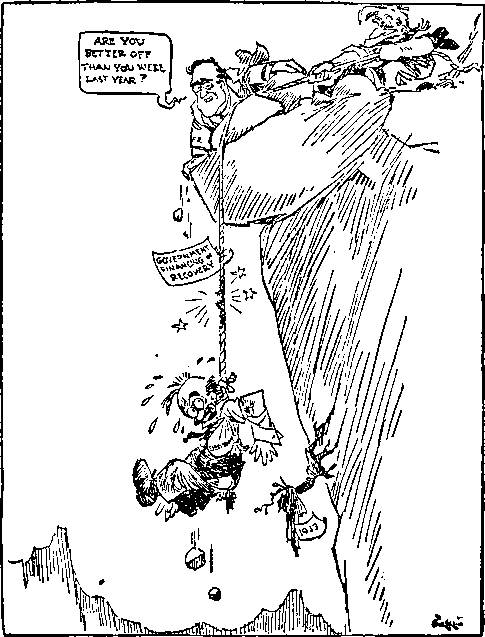

Street
State

A JOURNAL OF FACT HOPE AND COURAGE
lllltllllllllllllllilllllllllllllllllllHIIIIIIIIIIIIIIIIIIIIIIIIlIIIIIIIIIIIIII
in this issue
ABOUT THE HUMAN BODY
THE NEXT WAR
NEWS NOTES
RESURRECTION
THE GREAT PYRAMID: OF GOD OR OF SATAN?
iiigiiiiiiiiiiimiiiiiiimiiiiiiiiiiiiiiiiiiiiiiimiiiiiiiimiiiiiiiiiiiiiii
every other
WEDNESDAY
five cents a copy one dollar a year Canada & Foreign 1.25
Vol. XVI - No. 393
October 10, 1934
••axg). ..... .(gKj..
CONTENTS
• • • ■ ......— ■ .....■ ■■ । । ii i— ■ •
LABOR AND ECONOMICS
Pensions for All over Sixty ... 9
Economics of Robinson Crusoe . 10
What Broke the United States . . 10
Seattle Milk Dumped into Sewer . 21
SOCIAL AND EDUCATIONAL
Utopian Society Replaces Technocracy 11
Contrasts in the Day’s News . . 11
Making Progress Backwards ... 11 “Patriotism Has Lost Its Reason” 16 American Films O.K. in France . 23
MANUFACTURING AND MINING
Whipstocked Oil Wells .... 20
FINANCE—COMMERCE—TRANSPORTATION
Britain Losing Out to Japan . . 13
Railway Amalgamation in Canada 16
Jewish Boycott Cuts German Exports 16
Largest Deficit of Peace Times . . 19
Utilities Fight People of Bethlehem 20
Public Debt of the United States . 20
A Capitalist’s Patriotism .... 20
Universal Waybill to South America 20
LT. S. Factories in Canada ... 20
POLITICAL—DOMESTIC AND FOREiGN
Gift of Rifles to the Legion ... 12
Mothers May Transmit Citizenship 12
Gains of the Defaulters .... 13
Russell on Conditions in India . . 14
Sheep and Goats in Austria ... 15
Thyssen’s Power in Germany . . 15
AGRICULTURE AND HUSBANDRY
Twenty Pigs Went to Market . . 21
Army of Gulls at Ogden .... 21
Varieties of Electric Fish ... 21
SCIENCE AND INVENTION
Strange New Light Found ... 19
The Tesla Death Beams .... 21
New Fog Howler Is a Success . . 21
HOME AND HEALTH
This and That About the Human Body.....3
Doctor Kills His Own Child ... 31
Vaccination Suit in Wisconsin . . 31 In the Sixteenth Century ... 31
TRAVEL AND MISCELLANY
Achievements of Fascism ... 16
British Cotton Workers in China . 13
Telephone Blunder in Italy ... 24
150 Churches Burned.....24
RELIGION AND PHILOSOPHY
Resurrection........17
NR A and the Kingdom of God . . 19
Uses of Benedictine Wine ... 23
Mexicans Seem to Be in Earnest . 24
Souls in “Purgatory” Get Raw Deal 25
The Pope’s Flock......25
Saved the Boxes Full of Gold . . 25
The Great Pyramid:
of God or of Satan? .... 25
----—-------------------------
Published every other Wednesday by
GOLDEN AGE PUBLISHING COMPANY, INC.
117 Adams Street, Brooklyn, N. Y'., U. S. A.
Clayton J. Woodworth President Nathan H. Knorr Vice President
Charles E. Wagner Secretary and Treasurer
FINE CENTS A COPY $1 a year, United States ; $1.25 to Canada and all other countries.
Notice io Subscribers remittances : For your own safety, remit by postal or express money order. When coin or currency is lost in the ordinaly mails, there is no redrew. Remittances from countries other than those named below may be made to the Brooklyn office, but only by international postal money order.
receipt of a new or renewal subscription will be a< knowledged only when requested. notice of expiration is sent with th° journal one month beiore subscription expires. Please renew promptly to avoid loss of copies.
change of address : Subscribers will please notify this office of change of address at least two weeks in advance.
published also in Danish. Dutch, Esperanto. Finnish. French. German, Greek, Japanese, Norwegian, Polish, Slovak, Spanish, Swedish.
Offices for Other Countries
British........34 Craven Terrace. London, W. 2, England
Canadian.......40 Irwin Avenue, Toronto 5, Ontario, Canada
Australasian .... 7 Beresford Road, Strathfield, N. S. W., Australia South African.......Boston House, Cape Town, South Africa
Entered as second-class matter at Brooklyn, N. Y., under the Act of March 3, 1879. ,—— ------------------------—----—
Volume XVI Brooklyn, N. Y., Wednesday, October 10, 1934 Number 393
THE human body, like all other bodies, animate and inanimate, has size, measured up and down and around, and weight, and exterior and interior. In this article we shall not attempt to exhaust the subject; in fact, the human body, with its various organs and divisions, forms a well-nigh inexhaustible subject for study, and we do not anticipate that we shall do much more than merely touch upon that subject here and there.
As to the size of the human body, up and down, or its height, this varies a great deal, many of us being short and the rest of us tall (excepting, of course, those who are just average). Whatever may be the advantage of the tall, short and average arrangement, it at least makes for variety; and variety is something the human creature seems to crave. Nothing is more distasteful to the mind than sameness. The size of the individual is something about w7hich he has very little to say, particularly his height, and we have the Bible’s authority for it that no one can by “being anxious” add a cubit to his stature. That being the case, it is just as well for everybody to be satisfied with what he is, and not to fret about that which cannot be adjusted. When all is said and done, there is no merit in being either tall or short or neither.
When it comes to growth or lack of it, it is probable that those who are moderately short would not want to be of the size of John Aasen, of San Francisco, who measures 8 feet 9 inches and weighs 406 pounds. Doors are generally not made more than seven feet high; and so, anyone who is so indiscreet as to grow taller than that is put to considerable inconvenience in getting through the world. Those of our readers who are rather taller than the average may be glad that they are not so tall as John. Again, they would probably dislike the idea of “growing” shorter, the way Lillie Meyers, of Brooklyn, New York, did during the years from 1922 to 1927, in which time she lost ten inches in height. One instinctively shrinks from the thought of having to undergo such a reducing process.
It is said, on good authority, that lying down increases one’s height, or length, sometimes as much as an inch, depending upon the individual’s size to begin with. It seems that men gain a little more than women when reclining. But all this is only temporary, for the increased height disappears in the course of the day’s activities.
W'hen a boy, however, finds that he has grown to be six feet eight inches tall at the age of 14, he might be excused for trying to have something done about it. Willard Akin, of Denver, at least, thinks so, and has submitted to hypodermic injections of secretions taken from the frontal lobe of the pituitary gland. It may work, but it sounds risky.
Just a word about the way an individual’s height may be “distributed”. Some are longlegged and short above the waist, while others are proportionately shorter in the lower part of the body, and long from the waist up. In view of this fact we may question the claim of European scientists that they have worked out tables by which the height of prehistoric persons can be estimated by measuring one or two bones. We make no bones about saying that we don’t believe it.
As to the size of the body, around, we shall consider that a little later in the course of this ‘learned’ treatise. Just now we want to take a look at the outside, that is, the skin. The saying that beauty is only skin-deep is not true. The skin cannot be good-looking if it is not healthy, and it cannot be healthy if the body over which it is stretched is unhealthy. That sounds logical, doesn’t it? On the other hand, an unlovely skin will detract immensely from an otherwise well-proportioned and good-looking body or face.
The skin which covers the human body is
made up of two layers. The outer layer is protective as well as ornamental. The inner layer contains the glands, blood vessels and nerves, all of them, of course, very minute. A healthy skin is slightly moist (only slightly) and soft and pliable. If the skin is dry or oily the glands are not doing their work as they should. It doesn’t do much good to apply something on the outside. Proper food and needful rest, together with cleanliness, will do more good than all the lotions and creams that the drug stores offer. It is not necessary to use cream instead of water to cleanse the face. Perhaps you won’t believe it, but men have better complexions than women, taking them all in all. We hesitate to say this, but the truth must be told. Vegetables and fruits help to keep the system clean and the skin clear. Some advocate applying carrot juice and pineapple juice to the skin. Better apply it from the inside, however. That will do more good, benefiting not only the skin, but the rest of your organism.
Speaking of the skin, a Japanese physician had his entire body covered with thin paper, which was then removed, cut into flat pieces, and measured. Doctor Takahira found that it took 16 square feet of skin to cover him. He is 5 feet 6 inches tall. It is obviously wrong to refer to the skin as one’s birthday suit. The skin, together with the rest of the body, is changed every seven years.
If two-thirds of the body surface is burned the victim cannot possibly live. The skin performs an important function, that of breathing out the poisonous substances which are developed as a result of the activity of the body. Sometimes, in theatrical performances, a person is covered with gold paint to make him look like something he is not, an angel, for instance. (We don’t know who was responsible for the idea that angels have gold bodies.) Such gilding or other ornamentation of the skin, if not removed quickly, will cause the death of the individual, and the whole business is a risky one at best. The paint must be applied over something else to prevent its being absorbed.
It is not uncommon for savages and other uncivilized people to attempt an improvement on the work of the Creator by tattooing the skin with disfiguring marks, the entire body sometimes being covered with ludicrous designs and crude pictures. The Hebrews, when in divine favor, were forbidden to make any marks on their bodies.
Sun baths are a tonic to the skin, and are said to be beneficial because they decrease the sensitiveness of the skin. It is the ultra-violet rays, not the heat of the sun, that produce sunburn. Blonds are likely to develop freckles instead of an even tan. Some think that freckles and tan are nature’s way of providing a shield for the delicate nerve endings beneath the skin. Waves of high frequency are used in the treatment of disorders requiring internal warmth.
On Keeping Warm
American workmen employed close to a shortwave (10 meters) wireless station developed high temperatures as a result of the waves. This gave doctors an idea for the treatment of patients requiring maximum exposure to sun and air. Their beds being placed between two aerials, it was possible to dispense with bedclothes. The waves kept them warm.
The human body constantly gives off heat, and is therefore something like a stove. Instruments devised to measure the amount of heat given off by persons under different conditions show that a man with malarial fever and chills stores up large amounts of heat without affecting his surface temperature. In the normal body 65 percent of the heat generated is radiated, as heat which we do not need must be disposed of in some way. At the normal temperature of 98.6 degrees Fahrenheit an individual sends out enough heat every hour to raise three pints of water from room temperature to the boiling point.
Another item about the skin. People who drink too much alcohol often have red noses, and Dr. B. Kauders, of Vienna, has discovered that this is the result of damage to the part of the brain which governs the operation of the smaller blood vessels, resulting in a continually distended condition of these vessels in the nose and other parts of the face.
There was nothing the matter with the skin of S. H. Robison, of Greenville, Ohio, so far as anybody could see, but in the space of five months he changed from a white man to a black man, as far as his color is concerned. Outside, or inside, of that he is just as good as he was before.
How Much to Weigh
Now as to the weight of the human body. Here is a table which represents the average weight according to height and age. When all is said and done, the human creature refuses to he tabled and labeled, and so considerable allowance must be made for individual differences. Just because two persons happen to be of the same height is by no means a proof that they should weigh exactly the same. But here is the table:
Height
Ages
15-24 25-29 30-34 35-39 40-44 45-49 50-54 55-60
|
5' |
0" |
120 |
125 |
128 |
131 |
133 |
134 |
134 |
134 |
|
5' |
1" |
122 |
126 |
129 |
131 |
134 |
136 |
136 |
136 |
|
5' |
2" |
124 |
128 |
131 |
133 |
136 |
138 |
138 |
138 |
|
5' |
3" |
127 |
131 |
134 |
136 |
139 |
141 |
141 |
141 |
|
5' |
4" |
131 |
135 |
138 |
140 |
143 |
144 |
145 |
145 |
|
5' |
5" |
134 |
138 |
141 |
143 |
146 |
147 |
149 |
149 |
|
5' |
6" |
138 |
142 |
145 |
147 |
150 |
151 |
153 |
153 |
|
5' |
7" |
142 |
147 |
150 |
152 |
155 |
156 |
158 |
158 |
|
5' |
8" |
146 |
151 |
154 |
157 |
160 |
161 |
163 |
163 |
|
5' |
9" |
150 |
155 |
159 |
162 |
165 |
166 |
167 |
168 |
|
5'10" |
154 |
159 |
164 |
167 |
170 |
171 |
172 |
173 | |
|
5'11" |
159 |
164 |
169 |
173 |
175 |
177 |
177 |
178 | |
|
6' |
0" |
165 |
170 |
175 |
179 |
180 |
183 |
182 |
183 |
|
6' |
1" |
170 |
177 |
181 |
185 |
186 |
189 |
188 |
189 |
|
6' |
2" |
176 |
184 |
188 |
193 |
194 |
196 |
194 |
194 |
|
6' |
3" |
181 |
190 |
195 |
200 |
203 |
204 |
201 |
198 |
A person should weigh about two pounds for every inch of his height, according to another authority. This would make no considerable variation from the above table. Generally speaking, women will weigh slightly less and men rather more than indicated in the table. If you are ten percent above the average, don’t worry. If you are ten percent under, you need not worry, either, but you might look into your eating habits.
Insurance companies consider an underweight person a better risk than one who is overweight. Thin people are not so likely to succumb to diseases, but are more susceptible to influenza or tuberculosis than are those who are overweight. The latter are liable to such ills as diabetes and gall bladder trouble, as well as high blood pressure and fatty degeneration of the heart.
If one is very thin he is likely to be conscious of his meal (after eating it), and to be troubled with a feeling of heaviness. This is due to the fact that there is nothing to support the stomach properly. This organ tends to hang down too low and to create discomfort, in such cases.
Those who are twenty-five or more pounds underweight show twice the number of deaths from tuberculosis as compared with those of average or more than average weight. Fat folks do not often die of this disease.
Not all fat people are dissatisfied with their condition. One of them said, “We glory in our fat, our laughter, good temper, sociability, our appreciation of food and drink and company. We would rather die in full possession of our faculties in middle age than totter about in scrawny-legged misery a few extra years, lean and unlovely. . . .”
One genial soul, “Aunt Mamie” Williams, of Jacksonville, Florida, a colored mammy who at one time tipped the scales at 798 pounds, accused troublesome neighbors of causing her to lose 200 pounds and to make her “feel poorly”.
Many folks tend to take on weight toward middle age. This process is called the “middleage spread”. It is often considered to be a normal and natural thing, but is likely to be the result of wrong eating.
There is also a tendency, particularly among women, to increase in weight in winter. Cause, same as in preceding paragraph, and less activity.
When not replenished by food the average human body loses about three pounds in weight daily, due to evaporation of moisture through the lungs and pores and the losses due to activity.
Fat people often make heroic efforts to reduce. Some unwise young women, only slightly overweight, have brought about their death by “slimming”. Nitrophenol drugs, often used for this purpose, are dangerous. The effort to reduce by improper methods or to an unreasonable degree may also result in undermining the constitution to the extent of bringing about a nervous breakdown.
One radio corporation which broadcasts health exercises stated that in the space of one year 82,000 persons wanted to know how to reduce. Reducing remedies such as salts, tablets or pills, advertised as safe, harmless and efficient, bring results, but they are neither safe nor harmless, and should be avoided. There are proper ways and means of eliminating excess fat and reducing the weight to reasonable proportions. Figures published by the Public Health Service indicate that it is an advantage to be under the average weight when middle age is reached.
The raw food diet helps reduce weight without injury to the body. One of the benefits resulting from this diet is that the intake of common table salt is greatly reduced or entirely eliminated. Persons eating foods seasoned with salt have in their organism from two to four ounces of this inorganic substance, which must be kept in solution. This requires 112 ounces (seven pounds) of water for every ounce of salt. The water which makes up a large percentage of the human body is chemically very similar to sea water. Some of the constituents of this “solution” are beneficial and necessary; others, harmful.
When one goes on a raw food diet the salt deposit is gradually eliminated and the excessive amount of water required to keep it in solution is no longei' necessary. Experiments have proved that the use of salt will substantially increase the weight of the user. When it is discontinued the weight is reduced, particularly in the case of fat persons.
It undoubtedly requires a considerable amount of determination for a person who inclines to be fat to deny himself the foods which he is likely to crave the most. But the benefits resulting from a reducing diet and a subsequently properly balanced diet will undoubtedly repay the “faster” for his self-denial. Besides, fat is considered the foe of beauty. A bulging waistline, a double chin or a generally overstutfed appearance is deemed undesirable.
We give here, in separate paragraphs, suggestions from various sources as to what should he done to reduce, in addition to the raw food diet already mentioned.
1. Get out in the fresh air, take plenty of exercise, drink nothing but pure water, eat only raw fruits and raw vegetables without seasoning, and go to bed early, getting all the sleep you can. This recipe is guaranteed to bring about wonderful physical and mental improvement.
2. Proper feeding, proper exercise, proper elimination and massage.
3. Massage reduces only the weight of the masseur. Sweat rooms and Turkish baths are no more effective. Generate your own heat if reduction of weight is your object. A cold bath of five minutes, at 59 degrees Fahrenheit, will cause the loss of the energy represented by one egg or nine oysters. (Then why eat the oysters in the first place?)
4. Skating is a wonderful “reducer”. It does not encourage undue muscular development and causes no ugly saggings where the flesh has subsided.
5. Diet and exercise. The fattening foods are: All fats and oils, whether of animal or of vegetable origin; all starchy foods; and all concentrated sweet food. Obviously such foods should be avoided. Fish, eggs, buttermilk, the succulent vegetables and fresh juicy fruits are not fattening.
And, in addition to these, there is horseback riding and walking. No doubt climbing stairs and knocking on doors is also effective.
Reviewing all these enthusiastic recommendations, probably derived largely from experience, we believe it will be agreed that they are worth considering. Obviously overeating is likely to result in excess weight. This is not by any means the invariable result. Many people eat far more than they should and still remain thin or of normal proportions. Nor is it wise for fat people to entirely eliminate nourishing foods from the diet, though a gradual reduction is not only a good thing, but imperative. Natural foods are the least likely to tempt the individual to overeat. Whole-wheat bread, unpolished rice, and raw foods of all kinds do not unduly excite the appetite. Under normal conditions the appetite would be a safe guide to the kinds and quantities of food that should be eaten; but, with so much highly seasoned and refined food, it is easy to eat to excess and still fail to get the proper elements for the body’s needs.
As for exercises, there is much to be said for them, and something against them. Dr. Jesse F. Williams, professor of physical education, made the statement that morning setting-up exercises and a cold plunge are injurious more often than beneficial. Arthur E. Bagley, director of the health programs broadcast by the Metropolitan Insurance Company, has close to a million letters testifying to the benefits of morning exercises in “tuning up the physical and nervous organism”, correcting posture and building up the individual’s energy. Exercises, when properly balanced, bring into play all the 400 or more muscles in the human body. But every person must be treated as an individual case. What would be too much effort for one would be too little for another, and vice versa. The individual’s inclinations should not be entirely disregarded. When exercise becomes burdensome and entirely distasteful it is not likely to do much good. To go through a stipulated number of movements regardless of the feelings and inclinations of the person is as unprofitable as eating so many meals a day or drinking just so many glasses of water just because someone said that is the thing to do.
Gentle exercise stimulates the flow of digestive fluids in the stomach, but severe, protracted and violent exercise retards the flow, which is subsequently greatly increased. Gentle exercise hastens the emptying of the stomach; severe exertion delays digestion.
If the heart is healthy, exercise is all right; but if the heart has been affected by disease, one must be careful about exercising.
One German physical-training instructor uses animals as examples of the proper way to exercise. After a given number of lessons the pupil becomes proficient in imitating an animal such as, perhaps, the monkey. A good many persons manage quite well without the lessons.
A better suggestion is to watch the children at play and note their enthusiasm and naturalness, or, better still, play with them.
One authority says that exercises should be slow, smooth, regular and rhythmical. That sounds all right, but we have often wondered what makes anyone an “authority” in a thing of that kind.
Special apparatus is undesirable. A man of fifty needs a gentler form of exercise than the man of thirty. Moderation should be the rule, and fresh air is an indispensable ally.
Labor is not “exercise”. The man doing hard work is most likely to be overdeveloped in one way and underdeveloped in another. Exercises will offset the uneven use of the body, bringing into play muscles not used in performing the routine tasks of the shop and office. Spinal curvatures have been measurably corrected by means of counteracting exercises.
Physical Culture
That there is something in this exercise business, or physical culture, is evidenced by the fact that Bernarr Facfadden made a tremendous success of his Physical Culture magazine, incidentally becoming a millionaire. If he was not the pioneer of physical culturists, he is certainly among the few who have kept before the minds of the public the importance of exercise and other physical culture ideas. Walter Camp, with his “daily dozen”, was another leader in the field. When it comes to adopting forms of exercise recommended by enthusiastic physical culturists there is an endless variety to choose from. One recommends this kind of exercises, and another something else. But the basic idea of them all is that the muscles must be used— all the muscles. The degree and manner in which they shall be exercised is a matter of individual judgment. Undoubtedly almost everyone is much benefited by some form of exercise. It has done wonders for many sickly and underdeveloped individuals, particularly when combined with other health measures. The effort of some ambitious youths to develop bulging muscles has sometimes resulted disastrously.
The reasonable objective of exercise should be the development of a natural body, evenly distributed muscles, and a reasonable degree of endurance. Strength and endurance are different things. Strength depends upon the muscles; endurance, upon the state of the blood. Care should be taken not to develop the body at the expense of the internal organs. Gymnastics, therefore, should be followed not merely to develop the muscles here and there, but the entire man.
The healthy human body seeks for activity of some kind. It demands the opportunity to use the strength it possesses. A healthy person will not sit still unless induced to do so by artificial surroundings. Looking at a ball game, sitting in a motion-picture house, riding in an automobile, are results of civilization which bring with them the disuse and consequent deterioration of the muscles.
Amounts of physical activity said to be necessary to healthy persons at various ages are four hours daily at the age of five, five hours from seven to nine, six hours from nine to eleven, five hours from eleven to thirteen, four hours from thirteen to sixteen, three hours from sixteen to eighteen, two from eighteen to twenty, and one hour daily for persons over twenty years of age. This, no doubt, represents the minimum amount of activity necessary to maintain good health. More is better.
Exercise benefits the body because it stimulates the action of the heart and sends larger quantities of blood to the various parts of the body, in turn benefiting both the vital organs and the muscles.
Children seem to grow and develop with a fair amount of symmetry even when no systematic exercises are prescribed by learned professors. Common sense tells us that if we give nature a fair chance the results will not be wholly disappointing. The trouble is that grown-ups force themselves to follow an unnatural course for financial or other considerations. Necessity compels them to work at unhealthful occupations for long hours at a stretch, and the additional burden of forced exercises after a weary day of labor does not appear either desirable or necessary. But a half hour devoted to such balancing exercises will yield far more beneficial results than indulging the apparent demand of the body for rest. Children incline to make a game out of their tasks, or injecting into their activities the spontaneous spirit of play. They do things with a hop, skip and a jump, and wise elders will not forget that when all is said and done they are but children grown a little bigger. A grandma who skips and romps with her grandchildren is grandma in name only. Actually she is a playmate and pal, and, incidentally, a lot of fun.
Forcing all the children in a class to go through the same kind and the same amount of exercise is stupid. Each pupil is an individual case, and group tactics are unjust to every member of the class, whether advantaged or disadvantaged by them.
Walking as an exercise is better than sitting still while riding in an automobile. Indeed, stepping along briskly with chest out and arms swinging is a builder of vitality. This seems to be going out of fashion, and so golf is considered a necessary diversion by those who have the time and money to indulge in the pastime. But walking is cheaper, and to most of us just as much fun, especially out of town.
One hundred and twenty steps a minute is the standard pace for the army. A faster pace requires the expenditure of more effort. Perhaps the best pace for the individual is the one that happens to meet the inclination of the moment. Of course, sauntering along is hardly an exercise. One writer says that increasing the pace to 125, 130 or even 140 steps a minute is good for one who wants to reduce. We are told that the results will surprise us. Surplus weight will be reduced, girth diminished, the respiratory effort deepened, and the heart strengthened. You will tingle with the glow of the increased circulation and the healthy perspiration, and by following the walk with a hot soapy scrub and a cold shower, together with five or ten minutes on your back, you will feel that you could "whip your weight in wildcats”. All of w’hich sounds good.
Exercise, physical activity, is not a rest from brain-work. In a school where pupils studied hard the entire week, the principal "rested” them by taking them for an all-day hike one day a week. The result was a lot of cases of typhoid, grippe and brain-fag. An adjacent school, though housed in an unsanitary building, had no sickness at all. The body requires rest and relaxation. The provision for sabbaths (rest days) made in the old Jewish law, while pictorial, appear to have had a very practical reason back of them, also.
The nervous system is a very important part of the organism. Worry, excitement and noise irritate the nervous system and interfere with both work and rest. Efficiency is noticeably reduced by noises and disturbances, and rest periods are robbed of much of their effectiveness by discordant sounds and surroundings.
Massage is beneficial to the body, but as a reducer of surplus fat it does the "massager” more good than the “massagee”. The Hindus, Persians, Greeks and Romans were familiar with the art long before the Swedes and Finns made it their specialty. The Chinese have been using it for more than three thousand years. In Japan blind men often specialize in massage treatments, and are frequently seen, or rather heard, loudly advertising their profession in the streets, just as peddlers of various kinds may still be heard to make their presence known in American cities.
Speaking of strength of body, women are not by any means the weaker sex. In many European and Asiatic countries the women work as hard as the men, and frequently they work harder. Women are said to have greater tenacity of life than men. In hospitals male patients will make more fuss and give the nurses more trouble than patients of the opposite sex, nine cases out of ten. The average woman stands pain better than the average man. So the doctors tell us; and they should know. To every 29 girls that die at birth there are 36 boys that die. Women live longer than men; and though they are weaker than men in some respects, they are stronger in other respects. Indian women, according to an observer, "are made for labor; and one of them can carry or haul as much as two men.”
Whereas the average woman is 5 feet 4 inches high, the average man is 5 feet 8 inches. When it comes to length of body, however, there is an average difference of only one inch, which indicates that the average woman has better vital organs than the average man.
And now we have about reached the end of our remarks about the human body. Not much has been said about the kind of exercises that should be adopted to keep it fit. Natural movements, such as turning, bending, and moving various parts of the body are the best. They should be continued long enough to induce a slight feeling of fatigue, but no more. Those who are naturally strong will require more strenuous exercises than the slight-figured type. The latter should not be too anxious for muscular development, but seek rather to keep the body in trim by making use of every muscle for a short period daily. Regularity in exercising is of importance. Intermittent and irregular efforts yield no satisfactory results. As strength increases, the exercises may be made somewhat more strenuous, depending upon the individual. Let the objective be to have a balanced and natural body and one that enables you to perform the work that you are called upon to do.
The Next War By J. Skillicorn (Australia)
(Reprinted from Newcastle Morning Herald and Miners’ Advocate)
IT IS quite evident that we are again on the verge of what will probably be the most frightful war ever known.
Notwithstanding the fact that we were assured that the last war was a war to end wars, we are now about to be plunged into another infernal blood bath, with all its misery and degradation, its poison gases, pestilence, and devastation, anguish, death, and desolation.
This means that thousands of the virile youths of the various countries are to be cut off in their bloom in a war which is to be waged in support of vested interest, in a war to enrich pious tricksters and consummate scoundrels, who in the last war enhanced profit from every shot that was fired.
This statement is borne out by an admission in the British House of Commons which shows that Britain paid royalty to Krupp’s, and the German government paid royalty to British capitalists, while the soldiers were shattering each other to fragments.
In view of such heinous, barbarous, and pernicious transactions, I would ask: Is there any sane father who will advise his sons to participate in the next war? Is there any mother who will be willing to sacrifice her sons to be slaughtered by guns which send a ton of steel at a muzzle velocity of 3,000 feet a second? We were told that a grateful country would never forget those who participated in the last war, and in some cases that promise has been honored. For instance, Admiral Beatty received a Government grant of £100,000, Lord Haig £100,000, Admiral Jellicoe £50,000, General French £50,000, General Allenby £50,000, Generals Plumer, Rawlinson, Home, and Byng each £30,000, General Hankey £25,000, Generals Robertson, Birdwood, Wilson, Trenchard, and Admirals Madden, Sturdee, Roebuck, Keyes, and Tyrwhitt each £10,000. They will also get ordinary pensions and retiring allowances. But this does not apply to those unfortunates who occupied the trenches. They do not receive £100,000 grants. On the contrary, we find that in England their dependents in June and July, 1915, were actually starving. The Weekly Dispatch stated on July 2 that they had over 5,000 complaints, and were receiving up to 600 complaints per day. ‘We find that innumerable veterans have ended their days in workhouses, including those of the gallant Six Hundred.”
From the year 1496 B.C. to A.D. 1862 there were 3,130 years of war. Within the last three centuries there have been 286 wrars in Europe. From the year 1500 B.C. to A.D. 1860 more than 8,000 treaties of peace were concluded. The average time they remained in force was two years.
Pensions for All over Sixty
T\r. F. E. Townsend, of Long Beach, California, wants to bring prosperity by a pension of $200 monthly to every citizen, man or woman, over 60 who will retire from further labor for gain and will take oath to spend the pension within 30 days from receiving the same. The fund would be raised by a sales tax.
SAYS Samuel Danziger, in the Vancouver
Organizer:
“ ‘Friday,’ said Robinson Crusoe, ‘I’m sorry, I fear I must lay you off.’
“ ‘What do you mean, master ?’
“ ‘Why, you know there’s a big surplus of last year’s crop. I don’t need you to plant another this year. I’ve got enough goat-skin clothes to last me a lifetime. My house needs no repairs. I can gather turtle eggs myself. There’s an overproduction. When I need you I’ll send for you. You needn’t wait around here.’
“‘That’s all right, master. I’ll plant my own crop, build my own hut and gather all the eggs and nuts I want myself. I’ll get along fine.’
“ ‘Where will you dp all this, Friday ?’
“ ‘Here, on this island.’
“ ‘This island belongs to me, you know. I can’t allow you to do that when you can’t pay me anything I need. I might as well not own it.’
“ ‘Then I’ll build a canoe and fish in the ocean. You don’t own that.’
“ ‘That’s all right, provided you don’t use any of my trees for your canoe, or build it on my land, or use my beach for a landing place, and do your fishing far enough away so as not to interfere with my riparian rights.’
“ ‘I never thought of that, master. I can do without a boat, though. I’ll swim over to that rock and fish there and gather sea gull eggs.’
“ ‘No you won’t, Friday. The rock is mine. I own riparian rights.’
“ ‘What shall I do, master ?’
“ ‘That’s your problem, Friday. You are a free man and you know about the rugged individualism maintained here.’
“ ‘I guess I’ll starve, master. May I stay here until I do, or shall I swim beyond your riparian rights and drown or starve there?’
“ Tve thought of something, Friday. I don’t like to carry my garbage down to the shore each day. You may stay and do that. Then whatever is left of it after my dog and cat have been fed you may eat. You’re in luck.’
“ ‘Thank you, master. That is true charity.’
“ ‘One thing more, Friday. This island is overpopulated. Fifty percent of the people are unemployed. We are undergoing a severe depression and there is no way that I can see to end it. No one but a charlatan would say that he could. So keep a lookout and let no one land here to settle, and if any ship comes don’t let them land any goods of any kind. You must be protected against foreign labor. Conditions are fundamentally sound, though, and prosperity is just around the corner.’ ”
TN AN effort to discourage New York merchants from operating sweatshops in Connecticut such as they would not dare operate in New York city, the Sunday Herald, of Bridgeport, mentions a factory near that city where minor children were worked sometimes until midnight on garments bearing NRA labels. One child who, after school hours, put belts and bows on children’s dresses, received for three weeks’ work a grand total of 75c. On Saturdays and Sundays she worked full time; on other days she started at 4: 00 p.m., but sometimes did not stop work until midnight.
IN A RADIO address given in Boston, Edward A. Filene, prominent merchant, stated that what broke America was that “when the machines became so productive that the masses could buy only a fraction of their products, the machines had to be run on part time. That meant that millions lost their jobs. And that meant that the masses had still less buying power than before, so less was bought and more machines were shut down and unemployment and poverty increased. Poverty, not because of any scarcity, but because we had learned how to produce so much”.
TN 1929 the president of the National Dairy Products Corporation received a salary of $100,000, but in 1932, after the depression had got well under way, his salary was boosted to $168,000 and he was paid a bonus of $10,000 besides. In 1928 and 1929 the chairman of the Bethlehem Steel Company had a salary of $150,000 a year, but in 1930, when the working people everywhere were feeling the pinch, his salary was boosted to $250,000 a year.
THE National Industrial Conference Board figures that the three years of the depression from 1930 to 1933 cost the American people approximately $108,000,000,000, or almost three times what their participation in the World War cost them.
THE Utopian Society, which, replaces Technocracy, is attracting much attention in Los Angeles. At present 2,000 meetings a week are being held in that city. The membership is estimated at 250,000, increasing 5,000 a day. Each is known by number arid gives oath not to reveal the time, place or reason for the meeting, nor anything seen or heard, nor the name of any person attending. Announced aims:
“To learn why millions of deserving American citizens are now distressfully unemployed and why an increasing majority of these worthy citizens can never again hope to secure steady or satisfactory employment unless intelligent action is taken by the people themselves; to learn how and why the national tax and debt burden is hopelessly increasing out of all bounds of reason and resources; to learn the true character of a social structure that would be required to function to the greatest advantage of all the American people under conditions of plenty; and, finally, to learn if and how the American standard of living can be advanced by the application of reason to compare favorably with technical skill, equipment, machinery and natural resources of the nation. ’ ’
The Society projects a new kind of money, but is anti-communistic. It proposes a new social State, with the abolition of profit, but without any change in the Constitution. At a meeting in the Hollywood Bowl, June 23, 1934, 25,000 people paid admissions to hear Jonathan F. Glendon explain the purposes of the Society, and as many more were turned away. Each new member must bring in two more within a week. The speakers of the Society (its organizers were a writer, a salesman, and an attorney) are men of intelligence and ability. They foresee none required to work after 45 years of age, no taxes, no debts, no mortgages, no fear of poverty; new inventions and scientific discoveries to be for the benefit of all. One of the first duties of each Utopian is to write to President Roosevelt, praising the New Deal and imploring the final smashing of the present monetary system. All that the Utopians desire will be here, and much more, when God’s name is vindicated at Armageddon and all the devils, big and little, and those that have the Devil’s‘spirit, will be destroyed by the angels of God.
A Slave for Fifty Years
A SLAVE for fifty years, Elizabeth Carter died a few months ago at Sandusky, Ohio, at the age of 119 years. The last years of her life were spent in the Huron County Home.
T’HE AMERICAN GUARDIAN notes the following contrasts in the day’s news: An offer of a reward of $1,500 for the return of a bracelet containing 270 diamonds is near an item of a baby boy left in a Brooklyn vestibule with a note pinned to him saying: “Won’t someone be Icind enough to take my baby, and make a home for him? He’s wonderful! It breaks my heart to do this, but I must. I am unable to take care of him. Oh, I love him! God bless him and care for him. From his broken-hearted mother.” Another item is of a wealthy turfman burying his dog in a $400 bronze casket designed for a child (vault and monument $1,000 more), with an item of a baby buried in Potter’s Field because the father, a waiter, had been out of work eight months. A woman is robbed of jewelry worth $200,000, and near by a jobless man committed suicide and asked that his overcoat be given to some poor man who needed it. The estate of Payne Whitney increased in value over $50,000,000 in two years, and a shoemaker in Kansas put a sign in his window offering to give his children away because he was unable to care for them properly. A party was given to a debutante which cost $50,000, and two men fainted from hunger while applying for jobs at the mayor’s office in New York. A prominent banker builds a yacht for $3,000,000, and girl workers in a shirt factory are found getting as little as 25c a day. A mink coat is offered as a bargain at $3,900, and a jobless girl collapses from hunger. A baby of a year old is left a fortune of almost $2,000,000, and a mother in Brooklyn tries to suicide so her babies can have the benefit of the insurance on her life. Is any change needed? What think you? “Hear counsel, and receive instruction, that thou mayest be wise in thy latter end.”—Proverbs 19: 20.
Making Progress Backwards
Dr. Nicholas Murray Butler, president of Columbia University, addressing the students and teachers at the Columbia Summer School, asserted that the world has been going backwards for six years and that the only policy upon which the nations have been able to agree is that each one should borrow without limit. He said that world conditions are such that if not remedied they will bring civilization to an end. He could see no wisdom in paying farmers not to raise cotton and wheat at a time when there are millions without enough to eat or wear.
Norman Thomas puts it very well when he says that under the New Deal we are “trying to starve ourselves into prosperity” and “are to produce less so as to have more”. One of the most intelligent men in the country, a college-hred man, recent candidate for president on the Socialist ticket, Thomas was recently
Courtesy New York Herald Tribune.
booked to speak in Taylorville, Illinois. The sheriff was so frightened, for fear he might learn something, that he had him hustled into the courthouse while his orderly audience was dispersed by tear bombs.
CONGRESS recently gave 75,000 used but good rifles to the American Legion. If they could give used rifles, they could give new ones; and if they could give 75,000, they could give 750,000, or twice that number. One wonders why the gift. Possibly the coupon clippers have the thought that in case of anticipated trouble it might be a good thing to have some firearms lying around for use in case of a pinch.
rnHE new Federal Reserve notes will not hereafter contain the words “redeemable in gold on demand at the United States Treasury, or in gold or lawful money at any Federal Reserve Bank”. Experience has proved that those words never meant anything when printed there in the first place, so they may as well be removed. It is certainly of no use to repeat a promise which the promiser knows he has previously broken and ignored. Is there anybody in the United States who would believe any promises made by the French or the British government?
TN KINGS county (Brooklyn) New York it A takes 27 months to get a Supreme Court jury trial started; in New York county it takes 30 months; in Westchester county (Bronx) it takes 36 months. Six to nine months must be added to these figures for all cases in which an appeal is taken. Some eases were five or six years old before the Supreme Court disposed of them by trial. In many instances plaintiffs or witnesses are dead or scattered before trial is obtained.
DECLARING that the chief opponents of any improvements in the postal savings banks are the bankers, the National Convention of Post Office Clerks at Chicago has gone on record as advocating simplified methods, larger maximum deposits, checking accounts and joint accounts; and there is not a reason in the world why their advice should be ignored. When all the so-called Tegular’ banks in the country were closed, in March, 1933, the postal savings banks remained open.
UNTIL May, 1934, fathers could transmit citizenship to children born abroad, but mothers could not. This ridiculous inconsistency has now been corrected, ending the last discrimination against women in the nationality laws.
UNCLE SAM is desperately trying to borrow himself out of debt, but the more he borrows on an interest basis, the worse off he is. The interest charge on the national debt even now amounts to $3,000,000 for every day.
THE New York American says, bitterly, and truthfully:
When England was backed to the wall; when her civil population was faced by starvation; when her armies were being forced steadily back by the Central Powers; when her merchant marine was being sunk by submarines at the rate of 1,000,000 tons a month and not a week passed but forty ocean-going steam vessels were lost; when India was seething with revolt and Britain was unable, without American help, to maintain her currency system; when she could no longer buy the requisite food to support her civil population nor the munitions to supply her armies; when the shadow of forced surrender hung over the Empire —she turned to the United States for succor in the hour of her extremity. America responded. Our people tightened their belts. They reached down into their savings. They poured their money into British coffers. They said: Here, take this. It will help you. It will stay the disaster which threatens you. Spend it for your needs. We are coming with men and ships and money. We will follow up our loans with our manhood. Our soldiers will come to the rescue of your soldiers.
SHORTLY before the British repudiation of its debt to America the London Daily Express, after noting the general fear in Europe, said: “The British Empire and the United States of America should be two strong watch towers in the world, looking to the East and to the West, pledged to mutual friendship.” The British Empire is looking for something it will never see again. If Britain were to be again in the stress in which she was in 1917-1918, when the American people came to her rescue with their all, she would receive no help. The big financiers that pulled off their propaganda then have lost their standing as badly as Britain herself. The trick could not be done again, and all the newspaper palaver is so much wasted breath.
AT NEWCASTLE, England, 125 children of the unemployed were given a careful medical examination. Nearly half were below standard height, more than half were below standard weight, 23 percent were found to be anaemic, 49 suffered from chest trouble, acute or chronic, and 45 were unhealthy and unfit. “All my bones shall say, [Jehovah], who is like unto thee, which deliverest the poor from him that is too strong for him, yea, the poor and the needy from him that spoileth him?”—Psalm 35:10.
IN HER trade war with Japan Britain is losing out. The Japanese are putting their cotton, silk and rayon textiles, electric light bulbs, socks, bicycles, fountain pens, watches, umbrellas and a host of other things into every corner of the world at prices with which no western nation can compete. In 1913 Britain exported 6,780,000,000 yards of cotton goods; last year it was less than a third of that, and Japan’s was greater than Britain’s. One Japanese worker operates twenty machines; a British worker operates six. The Japanese worker receives about one-fourth the wages of the British worker. The way one mill owner put it was that if he stole his raw materials and paid nothing to his help he could not compete with Japanese prices.
THE old idea of running a country was to get some ideas and then try to put them into effect. The new idea is to put everybody in special shirts of some kind, and then it does not matter whether they know anything or not. In Italy and England the stress is on the black shirts, in Germany on brown shirts, in France on red shirts, in Ireland on green shirts, in Spain on blue shirts. In some countries they cannot afford any shirts and have to go back to the old plan of using their heads instead of the sewing machine.
CAPITALISM is in the last ditch in England, as everywhere, and the last ditch is Fascism.
In England the Fascists are coming together under the leadership of Sir Oswald Mosley. He recently addressed a large audience at Olympia, Kensington, subject to constant interruptions by Communists who went there for the purpose. Nothing the Communists could do would help Fascism more than to resort to such tactics.
THE German possessions turned over to
Britain and France are calculated as worth $198,000,000,000. France, in spite of all her war losses, has more territory, more population and more wealth than before the war. Of the six billions which she borrowed from the United States, she loaned two billions to her lesser allies.
Bertrand Russell, British author, writing in the Oriental Press, New York, says:
“Who fifty years lienee will have a good word to say for the present tyranny in India? No one. The system of promoting criminals to be prison officials, when by their sycophancy they have wormed their way into favor of the authorities, is one which she should not tolerate at home and has no right to inflict upon India. The regulation that prisoners are to have a fresh towel once every nine months does not err on the side of cleanliness. The practice of herding Indian ladies of refinement with prostitutes in the last stages of venereal disease is a questionable one. ... In some moment of difficulties elsewhere, we shall find ourselves confronted by a movement we shall not be able to repress : and we shall lose India with ignominy. ’ ’
rpiIE Times of India tells of a man in Lahore J- who in the presence of many witnesses was buried alive for half an hour, then dug up and found as fresh as ever. He was laid on a plank studded with six-inch nails, specially sharpened. While he thus lay on the nails a large stone was broken on his chest, with a sledge hammer. His arm was pierced with a long needle, but no blood was drawn. The needle was imbedded so deep that a weight of thirty pounds was attached to it and the whole thing lifted up in the air. These abuses of the body cause but the tiniest scars. The performers say their deeds are done by the power of Kali, that being the name of the demon responsible.
STUDIES in England have demonstrated that there is a direct relation between tuberculosis and food; that is to say, that nearly 1,000 people died in England during the past year in the depression areas who might have been spared in the more prosperous towns. Inadequate clothes and food lower the powers of resistance.
WHO would ever suppose they could have forest fires in England? Yet in May it was so dry that near Aidershot at one time twenty square miles of heath and forest land were in flames, with the flames leaping forty to fifty feet in the air. The well watered isle is suffering with a water scarcity seldom before experienced.
T TNDER the headline “One Radio Reformer”
the Ottawa Citizen contains a letter from Edna Snider, of Westboro, in which that lady says, forcefully:
“I have dismantled my radio and do not intend to use it or buy another until fairness and equal rights have been established for all. To make it clearer, I refuse to help pay the piper and accede to Messrs. Charlesworth and Co. the right to call the tune. I refuse to contribute to what has, in my opinion, become another nesting place for birds of entrenched privilege. I refuse further to be deprived of my right to heai- that which I desire to listen to in the way of religious discourses, viz., an intelligent, consistent, and so truthful an explanation of God’s Word—the Bible! The elaptrap and flapdoodle of professional pulpiteers may appeal to others of the radio audience; it does not appeal to me!”
AT THE time when, in the Northern Hemisphere, the United States, Canada, England, France, Germany, Russia and China were experiencing one of the greatest droughts in history, opposite conditions prevailed in South West Africa, where floods are the exception and drought is the rule. The African country was swept with tremendous floods -which cut communications, contaminated water supplies, and turned vast areas into mosquito-breeding swamps. As a result typhoid and malaria epidemics followed, costing many lives.
FACED with a serious water shortage the British war office went to the unusual expedient of employing a female water diviner to show them where to look for underground waters. The woman, manifestly under demoniacal influence, claims to be able to pass her hands over a large-scale map of any unknown country and to point out where water will be found.
DURING the British drought the government found it necessary to ration some villages to one pint of water per head per day; the health minimum is ten gallons, eighty times as much. In one district water drawn from wells had to stand two hours for the sediment to settle. For their washing water women had to tramp five miles. By the way, Ezekiel was on water rations once.—Ezekiel 4:11.
A GENTLEMAN residing in Vienna tells of the methods by which the Dollfuss government kept itself in power. The sheep, who approved of Dollfuss methods, were given uniforms, full board, lodging and clothes, and 50c per day wages. The goats, who did not approve the Dollfuss methods, were given food, overalls, rude shelters for the night, and the hardest kind of work on mountain roads, and 40c per week. The Heimwehr, Fascist Home Guards, who get about eight times the wages of the goats, have nothing to do but revel in military music, war decorations, titles and patriotism, and, naturally, it is at present more popular to be a sheep in Vienna than it is to be a goat.
IN Hitler’s eulogy of Hindenburg he is alleged to have said: ‘’President von Hindenburg is not dead. He lives and moves among the deathless of our own people and among the illustrious spirits of the past as eternal protector of the Reich and the German nation.” At this point we are confronted with the testimony of the Scriptures, “The dead know not any thing” (Ecclesiastes 9: 5), and “There is no work, nor device, nor knowledge, nor wisdom” (Ecclesiastes 9:10) where the old gentleman went, and modestly suggest that the Almighty is right, as was also the Savior, who said that all the dead are in their graves.—John 5: 28, 29.
A BRITISH subject in Bremerhaven protested to the German government against Nazi beatings in the prison camps. For doing this he was shadowed day and night, imprisoned three times, his wife was imprisoned, and even his lawyer. While in prison he was assaulted and painfully injured. He was then deported, with five marks in his pocket, with no baggage, and with no time to settle up his affairs.
THE New York Post, in a series of articles, declares that Hitler was put in power and is kept in power by Thyssen, virtual owner of half of Germany; that in his first year wages went down in the Thyssen-controlled steel and electrical industries, and profits in those industries went up 65 percent. The rest is all the horseplay of modern politics.
A GENTLEMAN who has been many times in Germany says that marching men, in uniform, are everywhere; that when a German business man gets home Saturday noon he puts on his uniform and straps a pack on his back, and spends his Saturday afternoon, and all day Sunday, marching. Thirty-six international conferences, intended to decide what is to be done with 65,000,000 German people, have seemingly had but one sure effect, and that is to put Hitler in power and make another world war seem near.
GERMAN editors have been told they must not print any polemics against the former emperor, must not print any antimonarchist propaganda, must not print descriptions of progress in Russia, must not mention the murder of a military officer by a subordinate, must not discuss the artificial silk market, must not discuss religious controversies, and must not discuss disturbances in Poland.
IT IS noted that Australian school children are taller and heavier at every age in 1922 than in 1912. Freedom from diseases is the cause ascribed. Australians are calling attention to the fact that between 1931 and 1934 the value of the 159 principal shares listed on their stock exchange increased 71 percent, but in that same interval of time the average wages were reduced by 20 percent.
Eye Troubles in Egypt
AFTER centuries of neglect, the people of Egypt are now paying attention to the care of their eyes, with the result that 6,000,000 out of a total population of 14,000,000 underwent treatment in 1931. Among school children 95 percent were found suffering from granular eyelids (trachoma). What a terrible condition the Devil’s world is in!
THE murder of Roehm, von Schleicher, and others who helped Hitler to power, no doubt helped him to remain in control, but had the effect of causing a big drop in the tourist business. Immediately after the murders, out of 181 passengers booked through to Bremerhaven, 98 disembarked at Southampton and Cherbourg.
"DACKETEERING, Chicago style, has broken out in London restaurants. An advance agent delicately suggests to a firm that it would be too bad if its business would be ruined by fights between rough customers. If the firm will join a society there will be no rough house. If the offer is refused the place is wrecked and its patronage destroyed by several fights. The Devil's kingdom, in all the ages past nothing but a succession of rackets of financiers, politicians and clergy, is near its end. Thank God!
TN AN address at Neath, Wales, David Lloyd George made the statement, “Everybody is afraid of war, and everybody is preparing for it. Women and children are now to be included in the sacrifice. Patriotism has lost its reason, and all lands are raving and raging with suspicion and downright fear of the very evils it is helping to create.” Sounds as if Lloyd George had read Judge Rutherford’s book Preparation but had not sufficiently profited by it.
TXT' AGES in Italy are the lowest in any Euro’’ pcan industrial country; there are over 1,000,000 unemployed; the decline in trade last year was $250,000,000, and the deficit last year was $350,000,000. In Germany unemployment is estimated at 6,000,000, wages are down, taxes are up, retail prices are very high, the country's supplies of raw materials are low, and the decline in trade last year was $175,000,000.
IN THE effort to meet Japanese competition, British cotton-mill owners have sent British cotton workers to China to teach the Chinese all about spinning and weaving. The men in the party will stay five years; the women will stay a year and a half. It is expected that at the end of that time the Chinese will be able to produce cloth at less cost than any other people.
TTETERMINED efforts are afoot in Canada to unify all the railroads of the Dominion, thus saving, so it is claimed, $75,000,000 a year in their operation. The railroad expressmen and telegraphers see immediately where half of them would be out of work by the amalgamation, and are not enthusiastic. Can you blame them?
HDHE nations that have been supplying arms to Bolivia and Paraguay are disturbed because the Liberians are not conducting themselves as they ought. Thus, they are reported as having driven 12,000 Kru natives from their villages and to have laid waste their habitations and their crops, causing the death of about 150. There is talk of expelling Liberia from the League of Munition Makers, sometimes called League of Nations. The best-known British armament firm secured orders for £1,500,000 worth of arms from Bolivia in six months. The British seem anxious to have Uncle Sam take the Liberian situation in hand.
A T MINEOLA, New York, a lady, a Christian Scientist, who had sued for damages sustained in an automobile accident was denied justice in the courtroom on the ground that her pains and fractures were not real, according to her faith, and that therefore she had no place in court. It would be hard to imagine anything more unjust. No matter what the woman believed, she had every right to ask for relief, and the court that twitted her because of her faith, and pretended that on account of it she had no right to ask for relief, was every whit wrong.
IN HIS book Iron, Blood and Profits: an Exposure of the World-wide Munitions Backet, by George Seldes (Harper’s), Mr. Seldes says: “There is now no need of war for trade routes, for colonies, for land, for surplus population, for markets. No reason for war remains, except sudden profits for the 50 men who run the munitions racket.”
THE British will continue the dole, having learned from actual experience that those on the dole gladly take work when they can get it, and that, in any event, all funds paid out to the unemployed come right back into the channels of trade.
Jewish Boycott Cuts German Exports
THE Jewish boycott of German goods is so effective in the United States, Canada and South Africa that German exports are less than at any time since the end of the war. They fell off twenty percent within the past year.
ANOTHER
of the series of Judge Rutherford’s five-minute Bible studies appears on this page. This is the tenth in the series of eighteen, each of which discusses some outstanding and fundamental doctrine of the Bible. The tendency of many exponents of Scripture to stress relatively unimportant matters and to overlook or neglect the great underlying truths of the Word of God is sedulously avoided. Frequent quotations from the Scriptures themselves, as well as indirect reference to their authority, make these talks a valuable means of more fully acquainting oneself with the letter and spirit of the Bible.
THE word “resurrection” moans a "standing up again to life’. If, as claimed by the clergy, the dead are alive in “purgatory” or some other place, then it follows that there could be no resurrection; and yet there is no truth more clearly taught in the Bible than that of the resurrection of the dead. Death means the absence of life, and resurrection means awakening to life again. If the dead are to live again, then they must be resurrected and God has provided that there shall be a resurrection. The basis for the resurrection of the dead is the sacrifice of Christ Jesus. All mankind were born in sin, and the death of the perfect man Jesus provided the purchase price for the right of man to live again, and in due time Jesus will awaken them out of death. Men had been dying for 4,000 years before the death of Jesus, and hence they knew nothing about the value of His death. Men have been dying in ignorance of the value of Jesus’ death for the past 1900 years. All of the dead in God’s due time shall be awakened out of death, that they may obtain a knowledge of the truth, and then each one for himself must choose to obey God and Christ and live, or else continue in sin and be for ever destroyed. Therefore it is written (Acts 24:15): “There shall be a resurrection of the dead, both of the just and unjust.”
God has appointed a fixed time for the resurrection of the dead, and that time is during the reign of Christ as King of the world. His reign has now begun, but His first great act is to destroy Satan and his power, and that will be done shortly, at the battle of Armageddon. Then will follow the resurrection of the dead. The resurrection of Christ Jesus is a guarantee that all who have died in ignorance must be awakened out of death and given a knowledge of the truth. For that reason the Scriptural argument, as set forth in 1 Corinthians 15, is this: Tf there be no resurrection of the dead, then Christ is not risen; and if Christ is risen, that is a guarantee that all the dead shall rise.’
The fact of the resurrection is complete proof that the doctrine of “purgatory”, concerning people’s being in a place of suffering, is entirely false. The Scriptures speak of death as sleep, because man is unconscious when asleep. The dead are asleep in Jesus, for the reason that Jesus has bought the right of man to live. Therefore it is written: “For if we believe that Jesus died and rose again, even so them also which sleep in Jesus will God bring with him.” (1 Thessalonians 4:14) The purpose of the awakening men out of death is to give them an opportunity and trial for life; and this will be given at the appearing of Christ Jesus and His kingdom. (2 Timothy 4:1) During the reign of Christ death itself wall be destroyed, in this, that all who then obey His righteous law shall live, and never die, and all the willfully wicked will be completely destroyed. For that reason Jesus said: “And whosoever liveth and believeth in me shall never die. Believest thou this?”—John 11:26.
Jehovah God in His loving-kindness has provided for the redemption of sinful man from death, through Christ Jesus’ sacrifice, and for the resurrection to life of men who believe and obey. The Devil tries to keep the people in total ignorance of this great truth, and for that reason has caused his representatives on earth to teach false doctrines. What the people must now do is to apply themselves to gain an understanding of the Bible, and to that end must provide themselves with the necessary books to enable them to find the texts in the Bible and learn their meaning. You can do this just as well in your own home as anywhere else. Write The
Watch Tower for a list of these books explaining these truths and you will receive such information free of charge. You owe it to yourself and your family to gain this knowledge. Jehovah’s way is always right and true. Learn that way and live.
Death has brought untold sorrow to mankind. The resurrection will bring boundless joy to those who obey God under Christ’s kingdom, and concerning which it is written: “And God shall wipe away all tears from their eyes; and there shall be no more death, neither sorrow, nor crying, neither shall there be any more pain: for the former things are passed away.” (Revelation 21:4) The faithful Christians will have part in the first resurrection, which means life in the spirit with Christ. The obedient ones on the earth during the reign of Christ will be given everlasting life on the earth in complete happiness.
[The foregoing talk is one of a series of eighteen recorded on nine phonograph records by the Watch Tower Bible & Tract Society, Brooklyn, N. Y., designed for use in the home and wherever the consideration of Scriptural truths is timely. The records are such as may be run on any phonograph at the usual rate of 78 revolutions per minute. They fill a long-felt want and are being used by many to pass on the message of truth to friends and neighbors. Inquiries should be addressed to the Society, and not to us.]
HOW the clergy do hate books that explain /A NE of Jehovah’s witnesses (colored) writes the Bible! In The Leader Reverend Bert from Jacksonville, Florida, that the govern
Brower in one paragraph advises his readers to burn Judge Rutherford’s books, and in the very next one makes the admission that most professed Christians today are like the eunuch who was honest enough to admit that he did not understand the. Bible and needed help. And then, says the Reverend Brower, “Most of us are that way: we know very little about the Book of books; we don’t know our Bibles.” The clergy are like that. They neither go into tire kingdom of heaven themselves, nor permit others who would.
rpiIE London Daily Mail has two pictures of -*■ police boarding a launch on the Thames, on which launch Judge Rutherford’s lectures were being broadcast. The errand of the police was peaceful; it was merely to tell the broadcasters that public meetings are not permitted within one mile of parliament buildings while parliament is in session. As soon as this information was imparted, the launch dropped down the river to another place and the meeting went on. ment sends food there for the relief of the poor, but the pastors of the various congregations direct where it shall go; it goes mostly to their own church members, as do also the opportunities to work; only if there is a surplus is a little given to others. A riot occurred at Wichita protesting against a work schedule of one day a week for single men and four days a week for married men with large families. A riot occurred at Tampa when midday meals to school children were stopped. We expect to see the Devil treat his dupes worse and worse now, until the final end of his inglorious career.
TpilE Milford (N.H.) Cabinet comes to hand. -*• On the front page is a news item extolling the beautiful music coming from one of the transcription outfits operated in that town by a group of Jehovah’s witnesses, and on the editorial page a caustic criticism of the very same incident. Probably in the meantime some preacher had gotten on the job and given the editor an ear full and he neglected to kill the news item which told the truth.
NRA and the Kingdom of God
Mark Sullivan claims to have had a “Hand
book for Speakers” containing talks for boosting the NRA. The “talk for a religious meeting” ends with the assurance to the audience that “NRA will bring about the kingdom of God on earth”. That is to say, so to speak, it will if it succeeds, but if it doesn’t, as now seems likely, then it will be the other condition which the theologians of yesteryear were wont to say so much about, but which prudence now prevents them from mentioning.
SECRETARY OF THE INTERIOR HAROLD L. ICKES
is reported as having said: “If the moral aspirations of the church should reinforce the political efforts now being made to establish a new social order, the advance all along the line ■would be irresistible and that new social and economic order, certain as it is to be realized in the end in any event, would be accomplished much more quickly and with infinitely less disturbance.” That is what might be called a bid for the church vote.
Ringing of Bells in Iowa
IN WATERLOO, Iowa, not realizing that they might just as w’ell have added the death penalty, certain of the city council proposed an ordinance making it an offense punishable by a $100 fine to ring any doorbell without a written invitation. But it should be hastily added that church bells that wake everybody on the one day when they would appreciate a little extra rest are quite the thing.
“Ye Suffer Fools Gladly”
rpHE newspapers that can barely find a decent word to say for the only work in the world that is sincerely interested in the honor of Jehovah’s name can find plenty of room to publish columns of stuff about a long-haired backwoods fanatic who allows a rattlesnake to bite him. The apostle got it right when he said to the Corinthians, “Ye suffer fools gladly.”
Strange New Light Found
fpWO chemists in the University of Jena, Ger--L many, have discovered a new strange light which emanates from certain chemically formed salts. It is not known what use can be made of the light. Edison was right when he said we hardly know the one-thousandth part of one percent about anything.
George Kept Right On
A YEAR ago the government, in its wisdom, was passing laws to cut down cotton and wheat acreage and was destroying millions of pigs before they were born. Then the government got what it wanted, a drought covering half the United States, and the live stock starving in its harness, but even after the drought ■was in evidence George E. Farrell, chief of the Agricultural Administration, extended for fifteen days the time when farmers might sign up for the reduction program. You see that was George’s job, and he didn’t know it was no longer necessary; so he kept right on until it wras too late to do any planting.
A CCORDING to the New York Post the secret police of New York city are in possession of a book by an Illinois woman in which are listed the persons who, in her judgment, ought properly to be classed as reds. Among those named as such are Senators Borah and Norris, Professor Irving Fisher of Yale, Newton D. Baker, Norman Thomas, Mayor LaGuardia, Secretaries Wallace and Ickes, and the wife of President Roosevelt. When the secret police want to have a good laugh they can lock the door, pull down the shades, turn on the electric lights, go to the safe, and get out the little red book.
Largest Deficit of Peace Times
IT IS estimated that the deficit for the fiscal years 1934 and 1935 will be $16,000,000,000, much the largest deficit of peace times in history. Part of the deficit was caused by payments to farmers to keep them from planting as much as usual. The administration has received some criticisms of the burning of surplus farm products in Iowa at a time when millions of people are in dire need. This winter, same as last, whole trainloads of cotton (255,000 bales) will be worked up into mattresses, quilts, pillow cases, towels and other requirements of the needy.
THERE are several explanations as to why the government’s $1,500,000,000 in gold at San Francisco was moved to the mint in Denver. One is that there are too many earthquakes in San Francisco; one is fear of Japan; and a third is uncertainty due to the dock strikes. Anyway, the gold was moved.
Utilities Fight the People of Bethlehem
LIKE Herod of old, the power trust is after the little folks of Bethlehem; but this time it is Bethlehem, Pennsylvania, and not Bethlehem, Palestine, and all the power trust wants is the privilege of robbing the parents, not of their children, but of part of their income devoted to feeding the children. When the people elected a mayor and council pledged to the erection of a municipal power and light plant, the power trust hurriedly got together and organized what they called a “Taxpayers’ Protective Association”, the object of which association is to stand behind the power trust and feed the people over the radio and otherwise with the usual pabulum that, since there is not an honest man in the power trust who if elected to serve the people would really do it, the wisest and best thing to do is to turn everything over to the trust and let them charge what they please.
IN THE year 1916 the public debt of the United States was $1,225,145,568. By the end of this year it is expected to be $32,000,000,000, which is 26 times as much, and it will require every year approximately as much to pay the interest as the total debt amounted to when Uncle Sam rushed out to make the world safe for hypocrisy. Now the desperate and unsuccessful rush is on to make it safe for the coupon clippers.
Whipstocked Oil Wells
INSTANCES are on record in California, and probably in other oil fields, where drills have been so directed as to cross the lines of three properties and to thus enable the wells to remove the oil from under a fourth property several hundred feet away. In one instance the fools of two rival operators became tangled, not on their own property, but on state-owned property nearly a quarter of a mile distant.
Big Business Against the People
GREENWOOD COUNTY, South Carolina, was allotted $2,767,000 by the government for the construction of a public-owned power plant. Would you not suppose everybody would be glad to see the people owning something? But the Duke Power Company, which came into existence through the Duke tobacco millions, had the meanness to appear at Washington and urge the cancellation of the allotment.
A Capitalist’s Patriotism
REFERRING to the flight of American capital to China, the New York Times says: It is known that one large international concern owned partly by American capital recently dismantled four of its factories here employing approximately 10,000 workers and transferred its operations to Shanghai. When an official was criticized for the move because of its effect on the unemployment situation here he replied that his responsibility was first to the shareholders of the corporation. . . . Without something to stop the trend, the feeling in some quarters is that the United States and other industrial countries will become largely agricultural nations, while the Orient, with its millions of workers, will in time become the industrialized section of the world.
AFTER three years of negotiation with countries to the south, arrangements have been perfected by which packages can be shipped from any express office in the United States, and delivery can be insured in 2J days in any Caribbean country and within 7 days in any country in South America. Pan American Airways carried 1,000,000 pounds of express last year, but, under this new arrangement, should show a great increase.
AN ODD feature of the depression, and one that has not helped American workingmen any, is that 200 factories have been established in Canada in the past four years by American concerns that heretofore supplied the Canadian market from plants located on this side of the line. Now these coupon-clipping patriots are also transferring their stock-gambling operations.
Reduction of 1,500,000 in Unemployed
rpriE figures of the American Federation of Labor show a steady decrease in the number of unemployed from 11,755,000 in January to 10,267,000 in May. At present half a million men are working directly on roads, and a million more are busy supplying highway materials.
IN JANUARY, 1934, sales of American munition makers to people at war or expecting soon to be at war were almost $50,000,000, and only a little less three months later. “Uncle Sam” is professedly the most peace-loving nation on earth.
Mus. A. Mosback, Cortland, Illinois, raised and sold 20 pigs, weighing at time of sale 1,630 pounds. The pigs brought $12.22, of which amount $2.80 went for use of pens, scales and runways, 55c for corn, $1.40 for insurance against injury en route, 5c for insurance against fire, $3.67 for hauling, $3.00 for selling them, and 7c for the meat board. The balance, 68c, Mrs. Mosback can use to help America’s leading financier, who for several years past has been unable to pay anything in the way of income tax.
THE Seattle Star shows a picture of a large can of milk being dumped into a sewer, in the effort to improve farmers’ profits. The object, so it is explained in the Star, is “to urge a shorter day and shorter hours so as to have more time to teach the cows to eat less grass to produce less milk and thereby create less surplus” for the mothers and babies on relief. Everybody who can understand that is entitled to a place on the AAA.
ON THE cut-over lands of northern Wisconsin the winter is severe and nine months long. In this area, where nothing but timber will make a crop, are two thousand families, left behind when the timber was all cut off. The only way they can live is by national, state and county aid. The only apparent hope for these cut-over lands is reforestation. Yet the Lord will make them blossom as the rose. He knows what to do.
625 Acres Disappear in Honduras
CRAWLING into a big hole and pulling the hole in after, 625 acres of cornfields have disappeared from the sides of Mount Erapuca, Honduras. The mountain, which is 8,000 feet high, is folding up like an accordion and the farm lands on its sides are being telescoped out of existence. It must be a strange sensation to wake up and find your farm standing on edge on the inside of a volcano.
IN TWO places in Poland hundreds of National Radicals (the Fascisti of Poland) pounced upon Jewish children while they were playing and beat them mercilessly. Twenty-two were sent to the hospital, including one policeman.
IT IS claimed that early in June sea gulls, intent upon the destruction of grasshoppers, were so thick at the Ogden airport that arrival and departure of planes was possible only early in the morning and late at night. During the night the birds made their habitat on islands in the Great Salt Lake. The same month that witnessed the sea-gull invasion in Utah witnessed a tremendous visitation of white moths to New Jersey. Drivers and motormen could not see to drive their cars; traffic and street lights were thickly covered, plunging the streets into darkness; and in South Orange the town clock on the village hall was completely obscured from vision.
SPHERE are some fifty varieties of electric fish. One of these, the electric ray, some three feet wide by four feet long, has about 450 hexagonal prisms filled -with a clear jelly-like substance. In reality they form a series of Leyden batteries. The mullet is quickly and easily shocked into insensibility, and therefore the electric rays live chiefly on mullets. The electric eel, still more powerful, may give a shock of 450 volts. The electric catfish lets other fish do the catching and chewing. It upsets their stomachs and takes its food second-hand.
Dr. Nikola Tesla announces four new inventions to add to the 700 already to his credit.
He claims that these four inventions, which have been perfected, and will be disclosed to the Armament Conference at Geneva, -will enable a country to bring down 10,000 airplanes at a distance of 250 miles, and will cause armies of millions to drop dead in their tracks without revealing what it -was that caused their death. Dr. Tesla claims that in peace times the death beams can be used to send power 200 miles with 99 percent efficiency.
fPHE new Jessen fog howler, a compressed-air siren, is reported to be a complete success.
Though it can be heard at a distance of eight miles, which is much farther than a steam whistle can be heard, it is almost inaudible to passengers on board; thus both their safety and their comfort are increased.
THE Inter-Faith Goodwill Committee in Butte, Montana, consists of the Reverend Thomas Ashworth, Episcopalian; the Reverend A. C. Caton, Methodist; Rabbi E. Sternheim, and the Very Reverend Monsignor J. Willging, Catholic. All four of these were in the February (1934) conspiracy of 22 clergymen of Butte and Anaconda to force Judge Rutherford off the air. The same sheet that gives the foregoing information also shows that the Gottheil Medal of Zeta Beta Tau Fraternity, the oldest and largest Jewish fraternity in the United States, which medal is awarded to the American who has done most for Jewry, was this year awarded to the Protestant-Catholic-Jewish trio, Clinchy, Ross and Lazaron, of the National Conference of Jews and Christians, for the flying trip they made over the United States to convince one another, and to try to convince the public that knows better, that there is no such thing as intolerance in the United States at this time. Jewish financiers evidently have been made to understand, or have come to see on their own responsibility, that it is of advantage to them to side in with the clergy of the Devil, and are putting on the vestments of identification which it is every way appropriate that they don at this time. The coupon clippers will do anything to save what is best described as ‘•bacon”.
A HORNELL (N. Y.) minister resigned the ministry, giving as his reasons that he denies the existence of deity, does not believe a single thing that Christianity teaches, and does not believe such a man as Jesus ever lived. He did quite right to resign; and now if all the other clergy who at heart are in the same condition will just do the same, that will be the end of the clergy myth and we can thereafter have true Christianity, and the Millennium.
A MINISTER of Portland, Oregon, advertised that his church had burned down; it drew a record crowd, but it was a lie. Subsequently he published a statement that he was sorry he lied. If you ask us if we object when a minister who has lied comes forward and tells the truth, we are happy to say we do not, and to add that if they had done that every time they have lied there would be nothing for us to do.
Big Business Tightens Purse Strings
TN Zion’s Herald the Reverend Robert Leonard
Tucker devotes two pages to evidence that the Big Business crowd is throwing the churches overboard. He says, in part: “Recently a church with a very large debt met W’ith representatives of a large insurance company in the East which carried the mortgage. This company declined to discuss the matter of reducing the rate of interest or of further carrying the mortgage until this church had satisfied the insurance company that it did not carry an item of a single dollar for missions in its budget. Receiving such assurance that this church did not and would not carry any item for missions in its budget, the company consented to continue negotiations.” Several similar cases are cited, indicating that Big Business is determined to have its money anyway, whether there is anything for missions or not. The only reason Big Business ever financed the church business was for what it could get out of it.
Prayers for Animals
rpHE London Evening News contains a picture A of a group of choir boys carrying effigies of animals and the announcement “Prayers for animals will be said in the chapel of the Heritage Craft Schools, Chailey, Sussex”. Having no knowledge of the Scriptures, and no interest whatever in them, the clergy naturally feel that they must do something “religious”; so here it is. But what have the poor dumb animals ever done to deserve this? The Devil is trying to make a complete farce of all so-called “faith”.
Pastors Getting Some of the Doctors’ Money
IN THE North, in recent years, Christmas seals have been sold and the money, in part, has gone to the erection of signs urging people to see their doctors. In Birmingham a sales organization put on a campaign for the use of Goto-Church seals, 25 percent of the gross receipts of which were to go to the Pastors’ Union. This diversion of funds caused considerable feeling in Birmingham.
Raps the Ten Commandments
A PHILADELPHIA “doctor of divinity”, a trainer of theologians, has stated that the ten commandments, written by the finger of Jehovah God himself, are now outmoded. Coming from such a source, this is what we would have expected. The clergy are entirely willing to criticize Jehovah God himself.
The Uses of Benedictine Wine
William Lloyd Clabk tells us that the special use of Benedictine wine, made at the Benedictine Monastery, Fa Comp, France, is to arouse the animal passions. The wine is specially doctored with ingredients for the purpose. It is specially useful in institutions where attractive single women are kept behind bars, subject to visits of celibate men; such women are never permitted to go out singly; they go out in pairs, so that there can be no squealing. On each bottle of Benedictine wine is the papal coat of arms and pope’s tiara. At present the pope is very anxious to clean up American movies. Seems as though, if he really wants to clean up something, nobody should discourage him. Cardinal Dougherty, of Philadelphia, in ordering the boycott of the movies in the diocese of Philadelphia, described them as attacking “the very foundations of our Christian civilization, namely, the sacrament of marriage, the purity of womanhood”. It was in Philadelphia that it required a big squad of policemen to force a group of girls back into a so-called “House of the Good Shepherd”; they fought desperately in a vain effort to escape from the hell hole in which they were confined. Seems as if Cardinal Dougherty could find something to clean up in Philadelphia besides the movies. All films were also boycotted in St. Louis, where the same boycotting outfit crowded Judge Rutherford off KMOX a year ago. When the boycott was put on in Cleveland the presiding archbishop urged Catholic Action to “infuse into society the spiritual life of Christ”. It was in Cleveland that the official Catholic paper, a year ago, managed to call Judge Rutherford some 82 vile names as its contribution on ‘infusing into society the spiritual life of Christ’. Protestant ministers generally are going along with Jezebel’s efforts to doll herself up for the party which is sure to come off when Jehu arrives. In Scranton the police got weary of the attacks made upon them by a prominent Protestant minister, shadowed him, found that he had been for a year and a half a constant visitor to the red light district, and finally caught him in a place and under circumstances that will make it unnecessary for him to preach any more in Scranton. The pope is very much in favor of the drive against the indecent films. It is doubtful if he knows how much of the drug called Spanish fly his monks put in the Benedictine wine. Control of the movies will henceforth be in the hands of the Catholics.
American Films O.K. in France
FRANCE’S chief censor, noting the great hullabaloo about indecent films, gave the American films a clean bill of health, stating that there had been no complaints against them, and that Germany and Italy are worse offenders. In America Catholic prelates are very busy. They have demanded that Will Hays, movie magnate, resign. He is a Presbyterian, and it is thought that a good Catholic should have his job. The rector of St. Andrew’s Roman Catholic church has blessed the wine cellars under Brooklyn bridge. Not sure if these wine cellars had any Benedictine wine in them, but presume they had. The Federal Council of Churches is circulating pledges to remain away from movies which “offend decency and Christian morality”. The Roman Catholic church will decide what is decent and moral. In New York these meetings between Catholics, Protestants and Jews at which word is given out as to what is decent and moral are held in the rectory of the Holy Cross Roman Catholic church. The clergy of the Jewish people are going along with the Catholic program. The pope has just asked the Italian Women's Catholic Action society to stamp out Protestant propaganda in Italy. The invitation to stamp it out in America has not yet come, but is on the way. After they get the movies cleaned up, with the help of the Protestants and Jews, the Catholics will then clean up the Protestants and Jews themselves, so these dispatches from Rome indicate.
rpHE Catholic Observer, diocesan paper of -L Pittsburgh, has a notice in its issue of August 16 reading as follows: “Important! Postal regulations forbid us to announce games of chance, drawings for door prizes, paddle wheels, or other such events, in parish social affairs. If those handling publicity for the various parishes will kindly remember to omit such reference it will eliminate any possibility of us getting into trouble with Uncle Sam and will not necessitate us cutting such references from their items. Your cooperation will be appreciated.” It may be added that the Catholic church is very anxious at this time to clean up the movies. The reason why it would wish to clean up the movies and not interfere with gambling under its own roof is sufficiently clear; it gets the movie money and the gambling money too by this sudden spasm of reform.
BY A COMICAL error in Italy, Tedeschini, papal nuncio in Madrid, thinking he was talking with a papal secretary in Vatican City was actually talking with a representative of the Spanish government. He went cheerfully ahead telling his comrade how to lie to the Spanish representative to the best advantage, and telling him also what the real plans and purposes of the Vatican were with regard to Spain. In an hour or so Tedeschini was confronted with his own words in Madrid and was almost paralyzed when he found he had been talking to the wrong party.
Mourning-maternity gowns are taboo in North Dakota. Judge G. Grimson has issued a permanent restraining order prohibiting members of school boards from “employing teachers who wear the distinctive garb or dress, insignia or symbols indicative of membership in any religious organization, or as indicative of a belief in any particular religion, church or its doctrine, tenets and dogma”. The order was issued because 23 nuns were employed as teachers in a half dozen North Dakota towns and insisted on wearing their black rigs when they went to work.
GRADUATING exercises of La Salle Academy. One of the greatest dignitaries of the Roman Catholic church speaking. The New York Times says that “in a voice filled with emotion” he pointed out “that President Roosevelt was chiefly responsible for stopping the ravages of the depression”. The following month there were 7,929 more persons on the relief rolls of New York city than at any other time in the 2| years that the Emergency Home Relief Bureau has been in operation. It is best not to get too emotional too soon.
AT THE anniversary, in Baltimore, of the 3OOth anniversary of the founding of Maryland and the 100th anniversary of the birth of Cardinal Gibbons, though the day was cool, 400 men, women and children fainted and 1,400 other cases were sent to the emergency hospital. When the little piece of bread was elevated there was a ten-cannon salute.
NEAR Windsor, Ontario, when the body of a twelve-year-old boy could not be recovered from the Detroit river, the Reverend J. A. Loiselle, pastor of St. Joseph church, River Canard, Ontario, blessed a loaf of bread, threw it into the water, and, it is claimed, within an hour the body came to the surface at the same spot. Obviously, no ship or boat should go out, nor should anybody go swimming without being equipped with bread blessed by the Reverend Loiselle. Why have any dr ownings at all when here is a method by which they can be prevented ?
OCCASIONALLY there is a Jew who has money enough to make it worth while for those who run the “purgatory” business to let him into “purgatory” when he dies; thereafter the routine is the same as if he were a Catholic. At Cleveland high requiem mass was said in St. John’s cathedral for one of the Richman brothers, clothing manufacturers, who died recently. If he had not had any money he would not have been allowed in “purgatory” and would have been out of luck.
Big Business at Oberammergau
THE Passion Play, held every ten years at Oberammergau, Germany, has developed into a big business enterprise. The stage, which cost a million marks, has a capacity for 600 players. The stage manager gives the performers their call through loud-speakers in the dressing rooms. The text this year mentions “the saving of the German people and its tribes from Bolshevism and the suppression of the antiChristian powers in the Fatherland”.
l\/rEXICAN officials seem to be in earnest in
their contention that Catholic priests must obey the law. All foreign priests were ordered out of the state of Sonora; they had been advising parents to keep their children from the public schools. In Zacatecas a bishop was arrested for wearing his ecclesiastical garb outside the church, contrary to law.
IT HAS been estimated that in the last three years in Spain no fewer than 150 churches were burned, monasteries pillaged and priests and nuns driven out of the country.
AT NEWARK, N. J., a retail liquor license has been granted to the Holy Name Society of St. Casimir’s Roman Catholic church. As it is against the law to issue a license to a booze joint within 200 feet of a church, and this one will be run as an annex of the church, the Reverend Paul Knappek, who will be interested in the receipts of the saloon, signed a legal waiver of objections to the saloon’s being so close to the images and holy water. As it gets harder and harder to get money out of the flock, Holy Name Society barrooms are bound to become increasingly frequent as annexes to Catholic churches. In the Bronx there was a parade two miles long of Holy Name Societies, against atheism and communism; it took 100 policemen to escort it, and would have taken 200 if the marchers had first visited the St. Casimir Holy Name saloon; so it is probably a good thing that it is in Newark and not in New York.
ANSWERING a question as to “what will happen to those people living at the end of the world who ordinarily would have gone to ‘purgatory’ ” the St. Anthony Messenger says, with a considerable measure of truth: “The horrors of the collapse of all creation at the end of time, as the Holy Bible foretells this awful catastrophe, will be so frightful as to equal and overshadow the sufferings in ‘purgatory’ and so intense that the people on earth at that time will sufficiently atone for their sins so as to be wholly cleansed.” The next step is to get the correct idea that the Armageddon which is thus described is just around the corner. St. Anthony’s Messenger has not told the half of it. In Armageddon every “purgatory” salesman will be done.
FORTY Catholic priests in West Virginia, Ohio and Indiana were stung an average of $12,000 each when a clever salesman got them to take bonds by using the name of Cardinal Mundelein. Of course, they had intended to use these funds to bail out friends in “purgatory”, but now that they have lost out on their speculations these friends will all have to remain in the cooker, for it is well known that neither Peter nor Mary, nor Joseph, nor anybody else who has any influence will do one thing until they get the long green in their fists. To trust is to bust; to bust is Hoboken.
Anna Mungiovi, of Lucata, Italy, was clever, but not quite clever enough. She exuded blood, which she said was blood-sweating, and she caused a crucifix at her home to exude blood. In some way it got out that she was using ox blood in her stunts and thus interfering with the regular miracle business. She was sentenced to three months in prison, but the sentence was suspended. Now they should sentence the priests from whom she learned this not too clever “skin-game”, and suspend their sentences until Armageddon.
The Pope’s Flock
FIGURES put out from Vatican City estimate the pope’s flock in America as 143,000,000; and in the world, as 392,709,534. This is probably twice the actual number, but every effort was made to get the number as big as possible so that none would confuse this flock with the one of which the Lord Jesus spoke when He said, “Fear not, little flock; for it is your Father’s good pleasure to give you the kingdom.”
Reverend Berthold Schwarz, the Franciscan friar who invented both gunpowder and cannon in the early part of the fourteenth century, was poorly paid. His first large order for cannons was for large guns for the government of Venice. The money for the guns was not promptly forthcoming, Schwarz got restless, his creditors got angry, and they threw him into prison, where he died.
WHEN the Catholic church at Piedras Ne-gras, Mexico, burned recently the fire squad had a hard time getting out the two coffers full of gold coins, but managed to do it before the roof of the church fell in. Piedras Negras, which has 23,000 population, is so poverty-stricken that it cannot afford a fire department and there are but two fire plugs in the city.
ONCE in ten years every Roman Catholic bishop is required to repair to Vatican City and make a personal report on the condition of his diocese. The main item is the collection that he takes along. If the collection is big the diocese is in good spiritual condition; if it is small the bishop is not onto his job.
IN THE land of Egypt, in the northern part of Africa, there is set up a great structure of stone which is called “the great pyramid of Gizeh”. For the past half-century many students of God’s Word have been taught and have believed that the great pyramid of Egypt is that which God through His prophet refers to in the nineteenth chapter of Isaiah. Many have relied upon that structure of stone to corroborate the testimony concerning what they call the “divine plan” as set forth in the Word of God. In fact, some have designated the pyramid “the Bible in stone” and “God’s stone witness”. If that were true, that would be an admission on God's part that His Word needs corroborative proof and is therefore insufficient in itself. If His Word needs corroborative proof, then the statement of Psalm 119:105, that His Word is the guide for His children, could not be true. If, however, His Word is sufficient as a guide for His children, then corroborative proof for His Word is superfluous. It belittles His written Word to say that it needs such proof. “All scripture is given by inspiration of God, and is profitable . . . that the man of God may be perfect, throughly furnished unto all good works.” —2 Timothy 3:16,17; John 17:17.
The burden is upon the devotees of the pyramid of Gizeh to show from God’s Word that He had anything whatsoever to do w7ith building it. If they make the proof, then they show that the Word of God is insufficient. If they fail to make the proof, then the pyramid should be put out of the mind of everyone who serves God. The facts are, however, that nowhere in God’s Word is the pyramid mentioned either directly or indirectly. Is it not passing strange that if God provided for His church to be taught by the measurements of a pile of stone neither Jesus nor any of the apostles had one word to say about it, but, on the contrary, emphasized the necessity of adhering closely to the Word of truth and unselfishly serving it? If the pyramid is not mentioned in the Bible, then following its teachings is being led by vain philosophy and false science and not following after Christ.— 1 Timothy 6:20; Colossians 2: 8.
By an ingenious method of drawing lines an effort is made to prove that the great pyramid is located “in the midst of the land of Egypt, and . . . at the border thereof”. (Isaiah 19:19) Many conscientious persons have swallowed this philosophy, bait, hook, sinker, line and all, without stopping to consider. In the first place it is a physical impossibility to place a tangible object in the midst of a certain tract of land and on the border thereof. By referring to the map of Egypt it is easy to be seen that the great pyramid is situated neither in the midst of the land of Egypt nor on the border thereof.
Egypt is approximately 600 miles long from north to south, and 250 miles wide in the broadest part. Ancient Egypt was bounded on the south by Ethiopia, and on the north by the Mediterranean sea. The prophet Ezekiel mentions the city of Syene (Seveneh, Hebrew), which was in the southern part of Egypt, and is nearer Egypt’s border than is the pyramid. (Ezekiel 29:10, margin; 30: 6, margin) The location of the pyramid of Gizeh is approximately 100 miles south of the Mediterranean sea, and 400 miles north of Seveneh; and, of course, the southern border of Egypt is still farther south than Seveneh. Therefore the location of the pyramid cannot be fitted to the prophecy, even if the prophecy referred to the land of Egypt.
Isaiah 19:19 says: “In that day shall there be an altar to the Lord in the midst of the land of Egypt.” The claim is made that the altar here mentioned refers to the pyramid of Gizeh. The Hebrew word from which “altar” is here translated means a place of sacrifice. There is nothing in the Scriptures to indicate that the pyramid is or ever will be a place of sacrifice. Surely it is not now a place of sacrifice. When the church of God is all complete there will then be no occasion for sacrifice. Their covenant with Jehovah God by sacrifice will be done.— Psalm 50: 5.
If Isaiah 19:19 is given a literal interpretation and applied to the land of Egypt, the facts must show that there has been, is now, or shall be in the future, sacrifice performed in Egypt at the pyramid. Not one word in the Bible would justify or support the conclusion that the pyramid is an altar, within the Scriptural meaning. The conclusion must be abandoned that the prophecy refers to the pyramid of Gizeh when it mentions the “altar”.
Continuing, the prophecy says: “And a pillar at the border thereof to the Lord.” The word “pillar” here used means a memorial column,
or a pillar of testimony. In support of the correctness of this definition the prophecy further says: “And it shall be for a sign and for a witness unto the Lord of hosts,” Jehovah. Never at any time in the past has the pyramid given testimony to the name of Jehovah; and surely it is not doing so now.
A pyramid is properly defined as a solid body standing on a triangular, square or polygonal base, and terminating in a point at the top. Such is the shape or form of the pyramid of Gizeh, except that there is no capstone or point at the top. Many men can stand on the top of it now. It has been stated that “the pyramid figure represents perfection and completeness” and symbolically represents the “plan of God” and particularly represents Christ Jesus the Head or topstone of the structure. In support Ephesians 2:19, 20 is quoted: “Now therefore ye . . . are built upon the foundation of the apostles and prophets, Jesus Christ himself being the chief corner stone.”
It is quite manifest that the apostle did not have in mind the pyramid of G izeh or any other pyramid when he wrote the above. He is there addressing God’s anointed saints and tells them that they are built upon the foundation of the prophets and apostles, Jesus himself being the chief corner stone. Then he adds: “In whom all the building, fitly framed together, groweth unto an holy temple in the Lord: in whom ye also are builded together for an habitation of God through the spirit.” (Ephesians 2:21,22) Again, he says: “Ye are God’s building.” (1 Corinthians 3:9) And: “Ye are the temple of the living God.”—2 Corinthians 6:16.
Clearly, in these scriptures the apostle had in mind the temple built by Solomon, which symbolically represents The Christ, both the Head thereof and the body. He could not have had in mind a pyramid. Solomon’s temple was not in the shape of a pyramid. God’s kingdom organization is described in Revelation 21:10-16, not as in the form of a pyramid, but as a great cube. Neither a pyramid nor any building of the shape of a pyramid is anywhere mentioned in the Scriptures. The facts show that Christ Jesus is the chief corner stone of God’s “new creation”, the church; but that fact is no evidence that the pyramid or its topstone represents Christ, even if it had a topstone.—2 Corinthians 5:17, R.V., margin; Ephesians 2:21,22.
The Scriptures describe the house of God as His temple, Christ Jesus as the Chief One in that house and as the Head of it, and the other members thereof are likened unto “living stones” built into that “house”. (1 Peter 2:4-10) The pyramid is not a house.
Certainly not Jehovah; nor was it built at His command. Yet to try to prove that the pyramid is “God’s building” Job 38: 4-6 has been quoted: “Where wast thou when I laid the foundations of the earth? declare, if thou hast understanding? Who hath laid the measures thereof, if thou knowest ? or who hath stretched the line upon it ? Whereupon are the foundations thereof fastened? or who laid the corner stone thereof?” But surely God wras not magnifying the importance of a pile of stone when He gave utterance to these words! It is so manifest that He referred to laying the foundations of the earth that there can be no doubt about it. Then He tells of another great thing that took place at that time: “The morning stars sang together, and all the sons of God shouted for joy." (Job 38:7) All these things occurred centuries before the creation of man, and many more centuries before the pyramid was built.
If Egyptian labor was used to construct the great pyramid, that of itself is conclusive proof that God had nothing to do with its building. It is said that the pyramid of Gizeh contains stones the estimated weight of which is eighty tons. Some of these stones are thirty feet in length. There is evidence that the stones were taken from a quarry on the east side of the river Nile and were dragged over to the site of the pyramid. If that work was done by human hands or human power, then it must have been done by men who were slaves. That being true, without a doubt many of them died from exhaustion or from being cruelly driven to the task. If there was any sacrifice about that pyramid, it was the sacrifice of slaves to build it. Jehovah God does not accomplish any of His work in that way. The great God of justice and love would not erect a structure which would result in the oppression of slaves and great loss of life.
It is more reasonable to conclude that the great pyramid, as well as the other pyramids thereabout, also the sphinx, were built by the rulers of Egypt and under the direction of Satan the Devil, whom such rulers served. The rulers of Egypt have been known for their oppression of slaves. The Devil is the great oppressor.
Of the sons of Noah that came out of the ark with him Jehovah God chose Shem and blessed him. Abraham the Hebrew was a descendant of Shem. Satan the Devil chose Ham, another son of Noah. Egypt is known as the land of Ham. (Psalm 105: 23) The Devil, by the use of Ham’s descendants, set up Egypt as the first great world power. Then Satan, the erstwhile holy cherub named Lucifer, put his knowledge in dead stone, which may be called “Satan’s Bible”, and not God’s stone witness. In erecting the pyramid, of course, Satan would put in it some truth, because that is his method of practicing fraud and deceit.
The information which Lucifer, one of the “morning stars” (Job 38: 7; Isaiah 14:12, margin), gained at the laying of the foundations of the earth doubtless included much concerning its measurements and God’s unit of measurements ; and by applying such knowledge Lucifer, now Satan, could put much in the pyramid that would harmonize with truth and which would serve to deceive men.
Isaiah 31:1 says: “Woe to them that go down to Egypt for help.” Whether this text be given a literal or a symbolic meaning, it is a warning to spiritual Israelites, God’s “new creation”. If applied literally, it means that the new creatures in Christ have gone down to literal Egypt to find proof to corroborate God’s so-called “plan”; which course is wrong. If applied symbolically, it means that new creatures have gone down to the world for help; they take such corroborative proof of worldly wisdom expressed in stone. Worldly wisdom proceeds not from God, but from the Devil. (1 Corinthians 3:19) The correct interpretation of Isaiah 31:1 is undoubtedly that the Christian should not seek wisdom from the world or from anything that is in the world, but should always look unto Jehovah, who speaks to His children through His Word. The Devil’s purpose at all times is to turn the mind of man away from God’s Word.
Isaiah, chapter nineteen, here considered, opens with the statement: “The burden of Egypt.” It does not relate to literal Egypt, of course. Symbolically Egypt always represents Satan’s organization or world. Pharaoh, the king or ruler of Egypt, is symbolical of the Devil himself. Note Ezekiel 29: 3 on this point: “Thus saith the Lord God, Behold, I am against thee, Pharaoh king of Egypt, the great dragon that lieth in the midst of his rivers [peoples], which hath said, My river is mine own, and I have made it for myself.” Satan the Devil claims the world as his, and all the people and nations (represented by the “rivers”) as his. He made this claim to Jesus, and Jesus did not dispute it. (Matthew 4:8-11) “The whole world lies under the evil one.” (1 John 5:19, Diaglott) No one will with Scripture successfully dispute the fact that Egypt symbolically represents the world, Satan’s organization. God Jehovah is against Satan's organization.
Isaiah’s prophecy continues: “Behold, the Lord rideth upon a swift cloud [not literal, of course, but a symbol of His unseen presence and betokening a fast-approaching storm], and shall come into Egypt.” Clearly this means the Lord’s taking action against the Devil’s organization, “the great city, which spiritually is called Sodom and Egypt, where also our Lord was crucified.” (Revelation 11:8) Thus the meaning of the word “Egypt” and the time of the prophecy's fulfilment are definitely fixed.
Isaiah’s prophecy says further: “And the idols of Egypt shall be moved at his [the Lord’s] presence [symbolized by the cloud], and the heart of Egypt shall melt in the midst of it.” Since 1918 and the close of the great World War that year the ecclesiastical organization of earth has adopted the League of Nations as the political expression of God’s kingdom on earth. The League organization, including the clergy and the principal ones of their church flocks, and the politicians and the profiteers, have been and are now in trouble. As Jesus foretold: ‘Men’s hearts are failing them for fear.’ (Luke 21: 25-27) The visible (earthly) part of Satan’s organization, while trying to direct the affairs of men and governments to keep the people in control, is suffering from a stroke of heart disease, and complete heart failure may soon follow.
Isaiah 19 further says: “And I will set the Egyptians against the Egyptians: and they shall fight every one against his brother, and every one against his neighbour; city against city, and kingdom against kingdom.” The present conditions and that which is clearly portended by present events help to locate the time of fulfilment of this part of the prophecy as at the oncoming battle of Armageddon.
The prophecy further says (verse 11): “Surely the princes of Zoan [Satan’s counselors] are fools, the counsel of the wise counsellors of Pharaoh [the Devil] is become brutish: how say ye unto Pharaoh, I am the son of the wise, the son of ancient kings 1” The time when these counselors are fools because of disregarding Jehovah God and even denying Him and His purposes is indicated by the further words of the prophecy: “Where are they? where are thy wise men? and let them tell thee now, and let them know what the Lord of hosts hath purposed upon Egypt.” The time is now! Everyone who knows God’s truth can surely see that “Christendom’s” advisers and counselors are fools. They refuse to acknowledge even the name of Jehovah as the great God, and scorn and maltreat Jehovah’s witnesses.
Further, verse 16: “In that day shall Egypt be like unto women; and it shall be afraid and fear, because of the shaking of the hand of the Lord of hosts, which he shaketh over it.” Jehovah is now brandishing His “Arm” (Christ Jesus) over the nations composing Satan’s visible organization, and this brings great fright to them, just as Jesus foretold: “Upon the earth distress of nations, with perplexity; . . . men’s hearts failing them for fear.” (Luke 21: 25, 26) And now the clergy in particular are like “women”, the weaker sex, and refuse to come out in the open and fight for what they believe. They content themselves by saying to their parishioners : ‘Believe what you please, just so you stick to us.’
“Judah” in prophecy means those who give praise to the name of Jehovah God. (Genesis 29: 35) Says verse 17: “And the land of Judah [not literal, of course, but meaning Jehovah’s witnesses under Christ, the Lion of Judah] shall be a terror unto Egypt: every one that maketh mention thereof shall be afraid in himself, because of the counsel of the Lord of hosts, which he hath determined against it.” Jehovah’s faithful witnesses go forth telling the people the truth, and the truth causes the representatives of Satan’s organization great pain. It strikes terror into their hearts (Ezekiel 30:9), and hence they try to keep it off the radio and to prevent it from being distributed in print from house to house by Jehovah’s witnesses. The next verse of the prophecy, Isaiah 19:18, refers to the same class, in the world (“the land of Egypt”) but speaking the speech of God’s land of promise and swearing in consecration of themselves to Jehovah of hosts. This class, God’s remnant, tell the people of the world concerning God’s determination to bring destruction on Satan’s organization.
Verse 19 (which many have believed refers to the pyramid of Gizeh): “In that day shall there be an altar to the Lord in the midst of the land of Egypt, and a pillar at the border thereof to the Lord.” The word “altar”, meaning a slaughterplace, or place of sacrifice, refers to those who are in relationship to God by reason of the covenant by sacrifice with Him.—Psalm 50: 5.
During the period of sacrifice, extending from Christ’s baptism and down to the setting up of His kingdom, many consecrating to God have been taken into the “covenant with me [Jehovah] by sacrifice”. (Psalm 50: 5) As one of such Paul says: “We are accounted as sheep for the slaughter.” (Romans 8:36) Concerning the faithful class who have been taken into the covenant by sacrifice Jesus said: “I have given them thy word; and the world hath hated them, because they are not of the world, even as I am not of the world.” (John 17:14) Otherwise stated, such are “in the midst of the land of Egypt” (the world) but not a part of it.
We are now “in that day”, and the faithful remnant of God is the altar class “to the Lord in the midst of the land of Egypt” (the world). That altar is not a pile of dead stone built up by oppressors long ago in the literal land of Egypt; but the altar represents God’s anointed witnesses now on earth. They are now in the world but are no part of the world, the Devil’s organization. These are daily offering up in righteousness their sacrifice of praise and devotion unto God, and by so doing are bearing the reproaches of Christ. (Malachi 3:3; Hebrews 13:13,15) These are God’s messengers, entrusted with the obligation of telling His message to the people. (Compare the symbolic language of Revelation 8: 3,5.)
The word “pillar” in the prophecy means a memorial column that stands forth as a witness giving testimony. “In that day shall there be . . . a pillar at the border thereof [of Egypt].” The faithful remnant today of Jehovah’s witnesses compose the “feet of him”, or the last members of the “body of Christ” now on earth (Isaiah 52:7); they are on the very border-line between the Devil’s kingdom and the kingdom of God. The time of transition from one to the other is here. They have journeyed down to the time when they are about to pass over the border out from the world and into the glorious kingdom of Jehovah. It is now easy to be seen how God’s remnant on earth can be truly said to be ‘an altar in the midst of Egypt (the world) and a pillar at the border thereof unto the Lord’. As an altar they are offering their sacrifice; as a pillar they are bearing witness for the Lord Jehovah God and His kingdom under Christ.
It is impossible to fit the literal pyramid of Gizeh to the prophet’s description; but the position and condition of the remnant of Jehovah’s witnesses exactly fit the prophetic description, which is therefore right. Another thing suggesting the time of fulfilment of that prophecy is what Jesus spoke to the “church in Philadelphia”, now applying: “Him that overcometh will I make a pillar in the temple of my God.” (Revelation 3:12) As long as such a one is of God's remnant and remains faithful he shall be a pillar in the spiritual temple of God bearing testimony; and thus it is written: “In his temple doth every one speak of his [Jehovah’s] glory.” —Psalm 29:9.
Continuing the prophecy says (verse 20): “And it [the altar-pillar] shall be for a sign and for a witness unto the Lord [Jehovah] of hosts in the land of Egypt: for they shall cry unto the Lord because of the oppressors, and he shall send them a saviour, and a great one, and he shall deliver them.” The pyramid of Gizeh is neither a sign nor a witness unto the Lord of hosts to show that the battle of Armageddon is the battle of Jehovah of hosts against Satan’s organization and that we are approaching that great battle of God Almighty. That which is “for a sign and for a witness unto the Lord of hosts in the land of Egypt” is now that faithful company of the followers of Christ which is called “Jehovah’s witnesses”. These are the ones that make up a little company that are doing what they can to exalt the name of Jehovah. The prophet Isaiah said that he and his sons were set for signs and wonders in the world, saying: “Behold, I, and the children whom the Lord hath given me, are for signs and for wonders in Israel from the Lord of hosts, which dwelleth in Zion.” According to Hebrews 2:13 Isaiah and his sons foreshadowed God’s remnant of witnesses under Christ Jesus. (See also Jeremiah 32:20 and Zechariah 3:8, R.V.)
God challenges Satan’s representatives to make proof of their claims or else to admit God’s truth. Then to His remnant Jehovah says: “Ye are my witnesses, saith the Lord, and my servant whom I have chosen; that ye may know and believe me, and understand that I am he: before me there was no God formed, neither shall there be after me. I have declared, and have saved, and I have shewed, when there was no strange god among you: therefore ye are my witnesses, saith the Lord [Jehovah], that I am God.” (Isaiah 43:10,12) Such are the only ones on earth that stand as a sign and pillar and a witness unto Jehovah of hosts. They are witnessing of Him and His name and concerning His kingdom and the expression of His vengeance at Armageddon, which is just ahead. Jehovah’s witnesses are putting forth their best endeavors to obey the command of the Lord by telling the good news to all the nations for a witness.—Matthew 24:14; Isaiah 61:1.
The prophecy says their witness is given at the time the people are crying unto the Lord because of oppression; “for they shall cry unto the Lord because of the oppressors, and he shall send them a saviour, and a great one, and he shall deliver them.” Throughout the entire visible part of Satan’s world today the cries of the people are heard against those who rule over them and who continue to oppress them. It is the condition just preceding the great and terrible expression of God’s wrath against Satan’s organization. Then follows the battle of Armageddon, which will bring deliverance to the people; and the knowledge of the great Savior, Jehovah, by His Vindicator, Christ Jesus, will bring them relief and everlasting blessings. “And,” continues the prophecy (verses 21, 22), “the Lord [Jehovah] shall be known to Egypt, and the Egyptians [the people once under Satan’s organization] shall know the Lord in that day, and shall do sacrifice and oblation; yea, they shall vow a vow unto the Lord, and perform it. And the Lord shall smite Egypt; he shall smite and heal it [the people, not Satan’s organization]: and they shall return even to the Lord, and he shall be entreated of them, and shall heal them.” Then will Jehovah spread to the people a “feast of fat things” (Isaiah 25: 6), and blindness shall be removed from their eyes, and Jehovah’s name then vindicated will be glorious throughout earth and heaven.
CALIFORNIA doctor put his wife on the train to see the Century of Progress exhibition at Chicago. She had hardly left the state before he inoculated his two beautiful and perfectly healthy boys with infantile paralysis serum. One of the boys died in a few hours, and the other was saved with great difficulty. The mother got as far as Salt Lake City and was summoned to return by plane.
Sensible Suggestion for the Elderly
Dr. Thomas Darlington, in the New York
Times, says that to ease the strain on the heart every person over 50 ought to make it a practice to lie down for a little while just after luncheon and just before dinner. The heart, which pounds away, 39,312,000 beats a year, thus gets a little relief. But until the Devil is off the job there is little relief for anybody.
LITTLE girl in London was born without a socket to one of her hips. Surgeons bisected her good hip, grafted a part upon the other, and after six years the child is now able to walk, as other children.
AT SHEBOYGAN, Wisconsin, Frederick Kirkpatrick sued for $20,000 because his ten-year-old boy went insane allegedly from vaccination. The jury decided in his favor, and for the full amount, but the court set the verdict aside because the boy’s mother had agreed to the vaccination.
IN THE sixteenth century 50 percent of mothers died in childbirth and one-half of all infants died. Out of 10,272 children admitted to the Dublin Foundling Home 55 survived; the other 10,217 could not stand the kind of care given to infants in those days. There has been some progress, after all.
UR1NG the World War James P. Sherry, of Rochester, New York, was wounded by a piece of shrapnel, a knife blade, driven red hot into his brain. The presence of the blade was not suspected for fifteen years, when at length headaches caused an X-ray examination and the discovery and removal of the blade.
Keep Posted on Important Happenings
EVERY two weeks The Golden Age brings to its readers a wealth of information along many lines; such as latest developments in science, items on how to keep well, travel, agriculture, labor, and many other subjects, all written in a brief and clearcut manner. And, best of all, each issue contains a short talk by Judge Rutherford, which is of greatest importance to all people of good will. There is not another magazine that will keep you as well informed on such a variety of subjects as The Golden Age. If you are not a regular reader of The Golden Age, subscribe now. If you are, then you will be glad to commend this excellent journal to your neighbors and friends.
If you subscribe now and use the coupon below, there will be sent to you, free, Judge Rutherford’s latest booklet, Righteous Ruler, and his two lectures “Praying for Prosperity” and “Famine”. You shouldn’t miss these!
The Golden Age, 117 Adams St., Brooklyn, N. Y.
Enclosed find $1.00 (Canada and other countries, $1.25) for a year’s subscription for The Golden Age. Also, please send me, free, Judge Rutherford’s latest booklets, Righteous Ruler and Prosperity-Famine.
Name ______
City
Street
State
Do You Have a Portable Phonograph and a Complete Set of Judge Rutherford’s 4</2-Minute Lectures?
If Not, Use the Coupon Below
THESE short lectures by Judge Rutherford on regular phonograph records have proved to be a very good means of carrying the message of the Kingdom to the people, and there are thousands of persons throughout the United States and other countries who are taking portable phonographs with these records to their friends and neighbors so that they may hear the clear and concise explanation of God’s Word.
We are pleased to announce that the Watch Tower Bible & Tract Society has on hand a good supply of portable phonographs which were specially made for the reproducing of these lectures. These phonographs are very sturdily built, light in weight, and can be very conveniently carried from place to place with a full set of the nine discs listed below. Every one of Jehovah’s witnesses, as well as Jonadabs and others, should obtain this equipment, if possible, and use it in his preaching of the gospel. Every company of Jehovah’s witnesses should have one or more of these phonographs available. We cannot overstate the rich blessings received in the use of these machines in spreading the message of the Kingdom.
The complete outfit can be had for only $19.25. This includes the phonograph completely equipped ready for use, and 18 of Judge Rutherford’s short lectures recorded
|
on 9 discs. The lectures are as follows: |
P-13 Holy P-14 Truth | ||||
|
P-1 P-2 |
Jehovah Rebellion |
P-7 P-8 |
Soul The Dead | ||
|
P-3 |
Redemption |
P-9 |
Purgatory |
P-15 Trinity |
11! |
|
P-4 |
Life |
P-10 |
Resurrection |
P-16 Keys | |
|
P-5 |
Kingdom |
P-11 |
Whose Servant? |
(Part 1) P-17 Sanctification | |
|
P-6 |
Armageddon |
P-12 |
Whose Servant? |
(Part 2) P-18 Sheep and Goats | |
These records can be run on any phonograph, at 78 revolutions per minute, and may be secured separately for $5.25, if so desired.
The Watch Tower, 117 Adams St., Brooklyn, N.Y.
Enclosed find ................................... for which you will please send me the following, as checked, which
1 will use in the preaching of the Kingdom:
□ Portable Phonograph and 9 discs ($19.25)
□ Nine discs, 18 lectures ($5.25)
(For individual discs the cost is 70c each.)
Name ..............................................................—............... —
Street _________________________-...............................................
City and State ....................-...........................-................ —